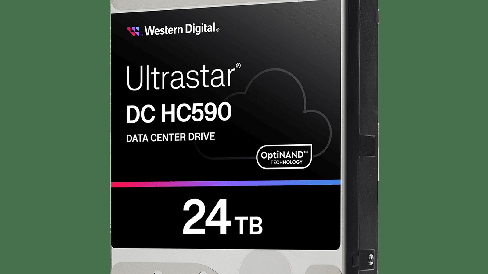
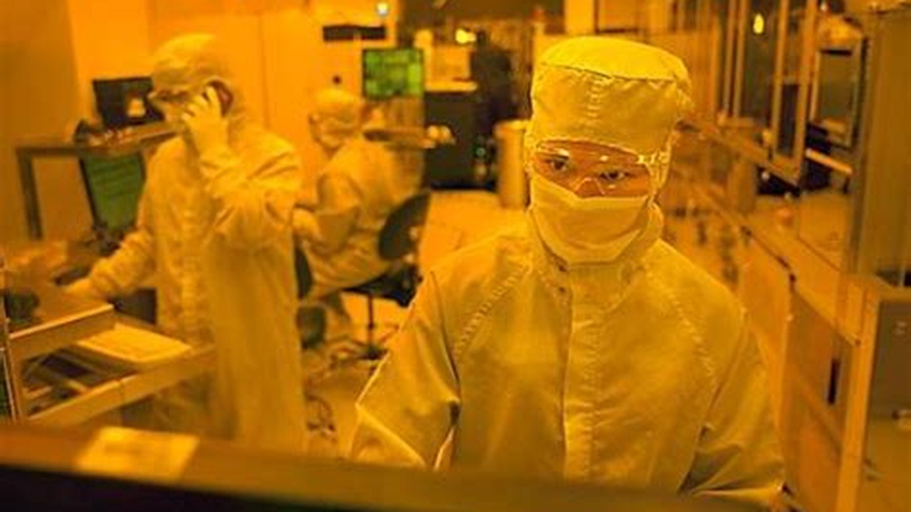
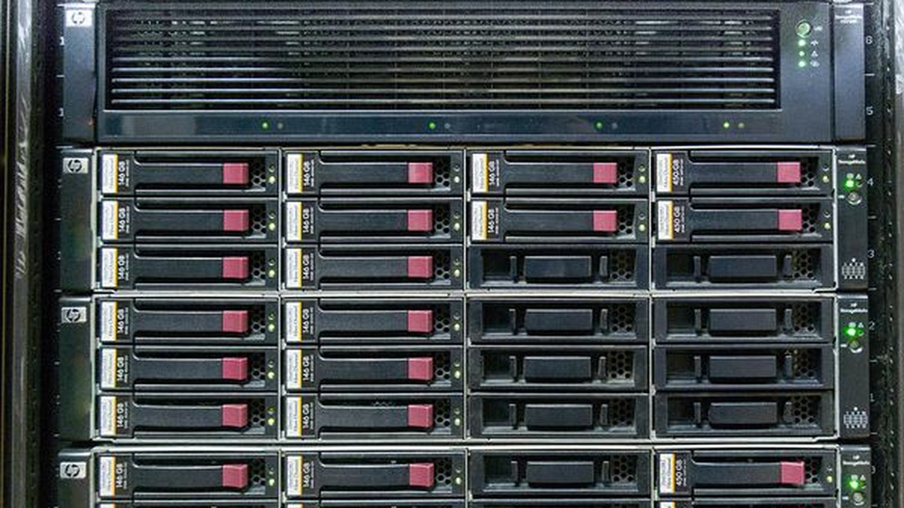
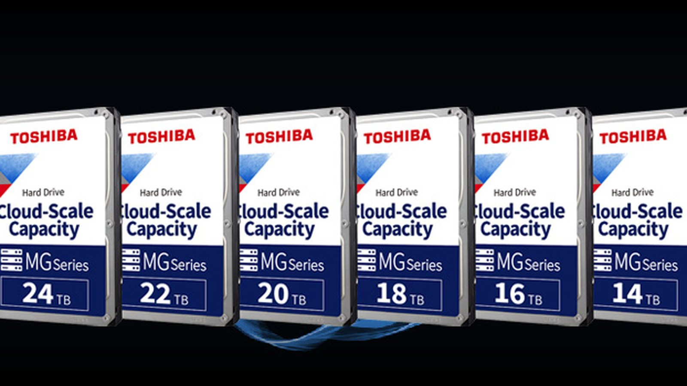
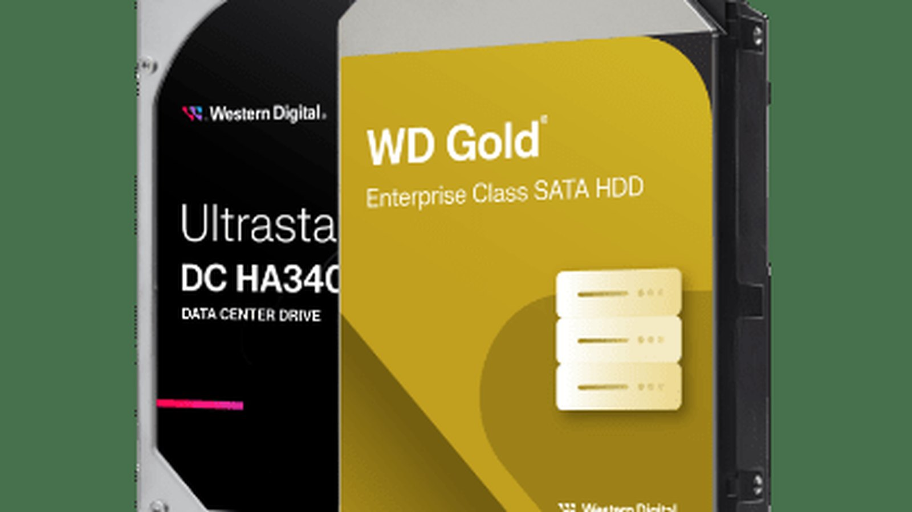
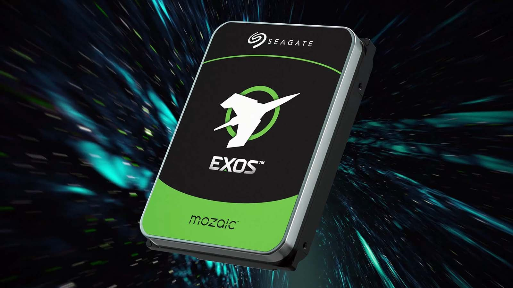

NASDAQ: WDC
西部数据
六十倍之后，剩下的是条约
这份报告怎么读，以及它不做什么
写作原则
- 所有数据标注来源与日期。能追到公司公告、10-K／10-Q、业绩会实录的，写清报表期；由本报告推算的，标注「本报告测算」并给出算式。
- 不假造调研。本报告未对西部数据及其客户、供应商做任何一手访谈。产业链信息全部来自公开披露与第三方机构，出处逐条标注。
- 区分事实与判断。事实段落用陈述句并附来源；判断段落写「我们认为」，并给出可被推翻的条件。
- 不用模糊词。「显著」「大幅」凡出现必附数字。拿不到数字的地方，说明为什么拿不到。
数据口径
财务数据为美国 GAAP，除特别标注外使用 Non-GAAP 口径（剔除股权激励、重组与分拆相关费用）。财年截止日为每年 6 月最后一个周五，FY2026 截至 2026 年 7 月 3 日。除特别说明外，金额单位为百万美元。
页码规则
章节编号与页码分离。2.3.1 表示第 2 章第 3 节第 1 个子目，页码见页脚右下。
本报告没有做的事
① 未访谈任何超大规模客户或渠道商；② 未拆解 40TB ePMR 与 44TB HAMR 实物，成本曲线为模型推算；③ 未使用付费的港口与海关数据核对出货；④ 未获取公司未公开的长约条款。
目录 八章
全文 8 章 · 48 节 · 162 个子目
图表 49 张，数据表 155 张，全部标注来源。第 2、3、5 章为核心，第 6 章给出目标价推导全过程。
八章结构与页面分布
| 章 | 标题 | 该章要回答的问题 | 页数 | 页码 |
|---|---|---|---|---|
| 01 | 公司：五十年里，它只做对了两件事 | 它凭什么在五十年里活下来，分拆又改变了什么 | 20 | 011—030 |
| 02 | 行业：钱在 EB 里，不在硬盘里 | 需求从哪来，供给为什么跟不上，价格由谁定 | 29 | 031—059 |
| 03 | 技术：领先十二个月值多少钱 | 技术领先能折算成几年超额利润 | 28 | 060—087 |
| 04 | 竞争：希捷领先，东芝在扩产 | 对手追上来要多久，追上来价格掉多少 | 21 | 088—108 |
| 05 | 财务：58% 的毛利率里，一半是价格 | 拆到价格、成本、一次性三项，还剩多少是能力 | 33 | 109—141 |
| 06 | 估值：周期股该用什么锚 | 现价隐含什么假设，这个假设合理吗 | 22 | 142—163 |
| 07 | 风险：九个可能出错的地方 | 什么信号出现时应该承认错了 | 15 | 164—178 |
| 08 | 结论：买不买，什么价，什么时候卖 | 评级、目标价、建仓与退出 | 13 | 179—191 |
| — | 附录与声明 | 来源、方法与免责声明 | 9 | 192—200 |
五条结论 一句话一条
- 这不是内存，是寡头合约生意。前七大客户已签确定订单，两家签到 2027 年、一家签到 2028 年，管理层称对 2030—2031 年有能见度。周期还在，但价格的下限被合约抬高了。（2.4 节）
- 58% 的毛利率不可持续，但 50% 可以。现价 318 美元对应 FY2028 基准盈利 11.3 倍、悲观盈利 16.7 倍——市场既没为乐观付钱，也没为悲观打折。（6.4 节）
- 每 EB 收入比希捷低 8%，估值也低 10%。1,766 万 vs 1,924 万美元。折价是合理的，不是错误定价——除非 40TB 放量把差距收窄。（4.2 节）
- 真正的风险不是需求，是东芝。2027 财年产能翻倍、份额目标 10%→30%。这条供给曲线右移，恰好落在 2028 年。（7.3 节）
- 13 倍 FY2027 盈利，赔率不对称。目标价 360 美元，较现价 +13.3%；悲观情形 180 美元，概率加权后仍有 16% 上行。（8.2 节）
评级、目标价与关键假设
目标价的三个组成部分
| 方法 | 关键假设 | 隐含价 | 权重 |
|---|---|---|---|
| FY2028E 市盈率 | EPS 28.0 × 13.5x | 378 | 50% |
| EV/EBITDA | EBITDA 132 亿 × 9.5x | 357 | 30% |
| 自由现金流收益率 | FCF 86.5 亿 ÷ 7.5% | 338 | 20% |
| 加权目标价 | 股本 3.66 亿股，净现金 5 亿 | 360 | 100% |
什么情况下这个判断会错
- 每 TB 价格在 FY2027Q4 前转负。若同比涨幅从 +28% 掉到 0 以下，FY2028 每股收益会跌到 20 美元以下，估值锚失效。
- 东芝提前达产。菲律宾工厂若在 2027 年内释放翻倍产能，2028 年行业供给增速将从 19% 跳到 28%。
- AI 资本开支断崖。2027 年超大规模资本开支若低于 8,000 亿美元（摩根士丹利预测 1.12 万亿），近线需求会先于供给见顶。
关键数据 一张表看完全部
| 指标 | FY2027Q1 | QoQ | YoY |
|---|---|---|---|
| 营业收入（百万美元） | 4,381 | +17% | +55% |
| 云（Cloud） | 3,868 | — | +54% |
| 客户端（Client） | 320 | — | +119% |
| 消费（Consumer） | 193 | — | +19% |
| 出货容量（EB） | 248 | +8% | +22% |
| 每 EB 收入（百万美元） | 17.7 | +8.8% | +28% |
| Non-GAAP 毛利率 | 58.1% | +3.7pt | +14.2pt |
| Non-GAAP 营业利润率 | 49.1% | +4.9pt | +18.7pt |
| Non-GAAP 每股收益（美元） | 4.64 | +30% | +161% |
| 自由现金流（百万美元） | 1,380 | +41% | +130% |
| 净现金（百万美元） | 511 | — | 转正 |
多空各自最硬的一条论据
多头最硬的一条：长约把周期变成了订阅
2026 年产能全部售罄，前七大客户持确定采购订单，两家签 2027 年、一家签 2028 年长期协议，管理层称七家客户的需求能见度已到 2030—2031 年。合约里带周年调价条款，现货 EB 另按当期供需定价。
| 证据 | 数值 |
|---|---|
| 2026 年产能状态 | 售罄 |
| 每 TB 价格同比 | +28% |
| Q2FY27 营收指引 | 51 亿美元 |
| 对应同比增速 | +69% |
若合约真的改变了定价机制，那么用历史周期低点的倍数来估值，本身就是错的。
空头最硬的一条：供给已经给出答案
东芝宣布投资 600 亿日元扩建菲律宾工厂，目标 2027 财年产能较 2025 财年翻倍，并把按容量计的份额目标从 10% 提到 30%。消息当天希捷盘中跌 16%、西部数据跌 14%。
| 证据 | 数值 |
|---|---|
| 东芝产能目标 | 2027 财年翻倍 |
| 东芝份额目标 | 10% → 30% |
| 2028 年 AI 资本开支增速 | +14% |
| 2027 年增速 | +60% |
需求增速从 60% 掉到 14%，供给同时翻倍。这两个数字出现在同一年，就是周期的定义。
判断
两条论据都成立，但作用在不同的年份。2027 年由多头定价，2028 年由空头定价。现价 318 美元，正好是这两种力量的中点——所以我们给增持，不给买入。
三种情景，三种股价
| 情景 | 核心假设 | FY28 EPS | 倍数 | 股价 | 概率 |
|---|---|---|---|---|---|
| 乐观 | 价格每年 +8%，EB 年增 22%，毛利率维持 64% | 38.9 | 14.0x | 540 | 30% |
| 基准 | 2028 年价格 −6%，EB 年增 21%，毛利率 62% | 28.0 | 12.9x | 360 | 45% |
| 悲观 | 2028 年价格 −18%，EB 增速降至 10%，毛利率 55% | 19.0 | 9.5x | 180 | 25% |
| 概率加权 | — | — | — | 369 | 100% |
七个可被证伪的判断
| # | 判断 | 验证指标 | 时点 | 证伪条件 |
|---|---|---|---|---|
| 1 | FY2027 营收超过 205 亿美元 | 季度营收合计 | 2027-07 | 低于 195 亿美元 |
| 2 | FY2027 毛利率不低于 57% | Non-GAAP 毛利率 | 2027-07 | 任一季度低于 53% |
| 3 | 每 TB 价格在 FY2027 内保持同比正增长 | 每 EB 收入 | 2027-07 | 任一季度同比转负 |
| 4 | 44TB HAMR 在 2027 年上半年量产 | 公司公告与出货 | 2027-09 | 推迟到 2028 年 |
| 5 | FY2028 营收增速回落到 25% 以下 | 年度营收 | 2028-07 | 增速高于 30% |
| 6 | 行业 2028 年供给增速不超过 30% | 三家产能公告 | 2028-07 | 超过 35% |
| 7 | 2027 年内不需要股权融资 | 现金流与负债 | 2027-12 | 增发或大额可转债 |
方法
每季度末对照一次。当 3 条以上被证伪时，无论盈亏都应重新审视持仓。第 3 条与第 6 条是核心：一条管价格，一条管供给。

公司
五十年里，它只做对了两件事
1970 年，它卖的是计算器芯片
西部数据 1970 年 4 月成立于加州 Newport Beach，创始人 Henry Voegeli 此前在摩托罗拉做半导体。公司的第一个产品不是硬盘，是计算器用的专用集成电路。
整个 1970 年代，它的生意是「给别人的系统做配套芯片」：计算器、打印机、终端机。1975 年进入软盘控制器，1980 年代成为 IBM PC 兼容机硬盘控制卡的主要供应商之一。
1988 年是分水岭。公司以约 6,300 万美元收购 Tandon 的硬盘业务，第一次拥有自己的盘片、磁头与组装线。这笔交易当时被看作「用控制器利润补贴一个亏损的硬件部门」。
回头看，这次收购决定了此后三十八年的公司形态：它从一家芯片设计公司，变成了一家垂直整合的精密制造公司。两者的管理逻辑完全不同——前者靠设计周期，后者靠良率与产能利用率。
关键节点
| 1970.04 | 成立，做计算器芯片 |
| 1975 | 进入软盘控制器 |
| 1988 | 收购 Tandon 硬盘业务 |
| 2012.03 | 48 亿美元收购日立存储 HGST |
| 2016.05 | 190 亿美元收购闪迪 |
| 2023.10 | 宣布拆分为两家公司 |
| 2025.02 | 闪迪分拆完成，WDC 只留 HDD |
| 2026.07 | FY2026 营收 129.2 亿美元 |
四次转折：三次买对了，一次卖对了
买对的部分
HGST 带来的 3.5 吋近线技术与泰国产能，是今天 48% 容份额的物质基础。没有 2012 年那笔交易，WDC 在 2026 年的行业地位会低一个数量级。
卖对的理由
闪存与硬盘的资本回报模型相反：NAND 需要持续的高强度资本开支换取成本下降，HDD 靠产能纪律维持价格。放在一个资产负债表里，两边的现金流互相抵消。
分拆把估值方式换了一次，不是把生意换了一次
分拆前，WDC 同时经营 HDD 与 NAND。市场给这类公司的估值方式是「分部加总再打折」——因为两块的周期不同步，投资者不愿意为任何一块付满倍数。
2025 年 2 月 21 日分拆完成后，WDC 的报表只剩 HDD。收入从 2024 财年的 63.2 亿美元（重述后）增长到 2026 财年的 129.2 亿美元，两年翻倍。
更关键的是估值坐标变了：全球只剩三家 HDD 供应商，而 WDC 是最大的一家。当一家公司变成「不可替代的寡头之一」，它的定价权讨论就从「周期位置」转向「合约结构」。
这是理解本报告的前提：2026 年的股价不是对 2026 年利润的定价，是对「这份利润能签多长的合约」的定价。
| 项目 | 分拆前 FY2024 | 分拆后 FY2026 |
|---|---|---|
| 营业收入（百万美元） | 6,317 | 12,919 |
| 毛利率 | 28.1% | 48.8% |
| 营业利润率 | −6.4% | 35.6% |
| 业务范围 | HDD + NAND | 仅 HDD |
| 全球 HDD 容份额 | 约 45% | 约 48% |
| 市场给的估值锚 | 分部折价 | 寡头定价权 |
纯硬盘的第一年：营收翻倍，毛利率涨了 10 个点
FY2026 是分拆后的第一个完整财年。营收 129.2 亿美元，同比增长 36%；Non-GAAP 毛利率 49.1%，比上一年的 39.4% 高 9.7 个百分点；自由现金流 35.1 亿美元，自由现金流利润率 27%。
拆开看，增量几乎全部来自云：云收入占比从 2025 财年的 82% 升到 2026 财年的 89%，第四季度单季 33 亿美元，同比 +43%。
这一年公司做了三件事：把 26 亿美元债务还掉、启动 20 亿美元回购授权、首次派息。三件事的顺序说明管理层的优先级——先修表，再回报。
注意：FY2026 GAAP 净利润 92.98 亿美元，其中约 54 亿美元来自闪迪持股的公允价值变动与债务置换的一次性收益。用 GAAP 净利润算市盈率会得到 12.8 倍，这个数字没有意义。
云占 88%，其余两块加起来不如一个零头
云（Cloud）指超大规模数据中心与云服务商，2027 财年第一季度收入 38.68 亿美元，占总收入 88.3%。客户端（Client）指 PC 与终端 OEM，3.20 亿美元，同比 +119%——这个增速来自 2025 年低基数与渠道补库存。
消费（Consumer）指零售与外置硬盘，1.93 亿美元，占比 4.4%，同比 +19%。这块业务的战略意义已经不大：CEO 在 2026 年 2 月明确表示，2026 年产能只有 5% 流向消费市场。
| 分部 | FY27Q1 | 占比 | 同比 |
|---|---|---|---|
| 云 | 3,868 | 88.3% | +54% |
| 客户端 | 320 | 7.3% | +119% |
| 消费 | 193 | 4.4% | +19% |
一张产品表看懂它的定价权从哪来
| 产品线 | 容量区间 | 记录方式 | 主要客户 | FY27Q1 定位 |
|---|---|---|---|---|
| Ultrastar DC（近线） | 24—40TB | ePMR / UltraSMR | 七大云厂商 | 占近线出货 90% |
| Ultrastar DC（HAMR） | 44TB | HAMR + SMR | 两家云厂商认证中 | 2027 上半年量产 |
| Ultrastar（企业级 CMR） | 4—24TB | CMR | 企业存储阵列 | 稳定，非增长重心 |
| WD Gold | 4—26TB | CMR | 中小企业、NAS | 高毛利，量小 |
| WD Red Pro | 4—26TB | CMR | NAS、监控 | 渠道业务 |
| WD Purple Pro | 8—26TB | CMR | 智慧视频 | 稳定现金流 |
| Client HDD | 500GB—2TB | CMR | PC OEM | 供给紧张下的配额业务 |
七家客户，三份长约，一张排到 2031 年的订单簿
公司披露前七大客户均持确定采购订单；其中两家签了 2027 年长期协议，一家签了 2028 年。2026 年 10 月的电话会上，CEO 说对七家客户「在 2030、2031 年都有很好的能见度」。
这句话的含义需要拆开：能见度不等于合约。真正有法律约束力的价格与数量，只到 2027—2028 年；2030—2031 年是客户给出的需求规划，可以调整。
按收入占比估算，前七大客户合计贡献约 80% 的收入，单一最大客户约 15%—20%。这个集中度在硬件行业里属于高位，但在云存储的语境下是常态——全球能买 200EB 硬盘的公司本来就不超过十家。
集中度是双刃剑：它让价格谈判变成三方博弈（WDC、希捷、客户），而不是完全竞争；但也意味着任何一家客户削减资本开支，都会直接打在季度报表上。
| 合约状态 | 客户数 | 期限 |
|---|---|---|
| 确定采购订单 | 7 | 2026 年内 |
| 长期协议 | 2 | 覆盖 2027 年 |
| 长期协议 | 1 | 覆盖 2028 年 |
| 需求规划 | 7 | 至 2030—2031 年 |

硬盘是唯一还在用洁净室造存储的生意
一块 40TB 硬盘里有 11 张盘片、22 个磁头，磁头飞行高度约 2 纳米。这个精度决定了它无法像封测厂那样快速扩产——一条产线从建成到爬坡要 18 个月，而需求可以在一个季度内翻倍。
图为硬盘洁净室产线（公开图片）
全球 80% 的硬盘从泰国出海，这是一个无法复制的集群
硬盘不是芯片，它的成本结构里 40% 以上是精密机械件：主轴马达、磁头臂、盘片、底座铸件、螺丝。这些零件供应商必须离总装厂足够近，否则物流与库存会把毛利吃掉。
泰国用四十年时间建成了这个集群。希捷在泰国超过 40 年，西部数据的大城府（Ayutthaya）与巴吞他尼（Pathum Thani）工厂是主力，东芝的菲律宾厂则在追赶。三家的总装线集中在同一片工业带，共享同一批二级供应商。
2026 年 4 月，WDC 获得泰国投资促进委员会批准，在大城府投资约 235 亿泰铢（约 6.7 亿美元）扩建 HDD 产能，主攻 16—32TB 近线产品，2027 年起逐步释放。
这个集群的另一面是风险：洪水、电力、劳工政策任何一项出问题，全球硬盘供应会同时受影响。2011 年泰国洪水让当季全球硬盘出货下滑约 30%，行业用了三个季度才恢复。
| 基地 | 职能 | 备注 |
|---|---|---|
| 泰国·大城府 | HDD 总装、HAMR 产线 | 235 亿泰铢扩建，2027 释放 |
| 泰国·巴吞他尼 | HDD 总装 | 老厂，技改为主 |
| 马来西亚·槟城 | 磁头、基板 | 垂直整合关键环节 |
| 马来西亚·柔佛 | 盘片 | 2024 年扩产 |
| 菲律宾 | 部分组装 | 规模小于泰国 |
| 墨西哥 | 北美交付 | 贴近客户 |
磁头、盘片、马达：三个卡脖子的环节
| 环节 | 自产率 | 扩产周期 | 2027 供给弹性 |
|---|---|---|---|
| 磁头 | 约 70% | 18 个月 | 低 |
| 盘片 | 约 80% | 24 个月 | 低 |
| 马达 | 0% | 外购 | 中 |
| 总装 | 100% | 12 个月 | 高 |
这解释了为什么「涨价」能持续：当所有厂商的瓶颈都在零件端，产能不会因为总装线加班而增加。
也解释了东芝扩产为什么难：它没有自产磁头，全部依赖 TDK。菲律宾工厂的产能翻倍计划，前提是 TDK 给它同样的配额——而 TDK 的磁头业务正在被希捷和 WDC 争抢。
23.5 亿泰铢买的不是产能，是 2027 年的份额
235 亿泰铢约合 6.7 亿美元，对一家年收入 129 亿美元的公司来说不算大。但这笔钱的方向很明确：16—32TB 近线产品的总装线，以及 HAMR 相关设备。
换算成产能：按 2026 年单条近线产线的投资强度，这笔钱大约对应每年 60—80EB 的新增容量，相当于 2026 年全行业出货量的 3%—4%。
公司同时给出长期资本开支框架：未来五年平均占营收 4%—6%，未来两年略高于这个区间。按 FY2027 营收 210 亿美元计算，资本开支约 10—13 亿美元，仍远低于 2019—2020 年 NAND 时代的水平。
关键判断：WDC 的扩产是「跟着良率走」，不是「跟着需求走」。这决定了它在 2027 年不会主动打破价格——因为打破价格对它的伤害大于份额收益。
| 项目 | 金额 | 时间 |
|---|---|---|
| 泰国大城府扩建 | 235 亿泰铢 | 2027 起释放 |
| HAMR 产线改造 | 未披露 | 2026—2027 |
| 五年资本开支框架 | 营收的 4%—6% | 2027—2031 |
Irving Tan：从思科 COO 到硬盘厂 CEO
Irving Tan 于 2025 年 2 月 24 日接任 CEO，此前三年是 WDC 全球运营执行副总裁。更早的履历在思科：2019—2021 年任思科首席运营官，2021—2022 年任亚太日本及中国区主席。
这个背景决定了公司的管理重心。他不是技术出身的产品型 CEO，是运营与客户关系型 CEO。在供给紧缺、客户集中度极高的市场里，这两种能力的价值排序会反过来——能谈到长约的人，比能定义规格的人更重要。
CFO Kris Sennesael 于 2024 年加入，此前在赛灵思与安华高（Avago）体系任职，擅长在周期高点做资产负债表管理。2026 年的一系列动作——削减 2028 年可转债、回购、提高股息——是他的手笔。
管理层在 2026 年给出的指引可信度较高：连续四个季度实际值高于指引上限。这与 2019—2022 年「指引保守、执行打折」的时期形成对比。
Irving Tan
| 年龄 | 55 岁 |
| 2025.02 至今 | WDC 首席执行官 |
| 2022—2025 | WDC 全球运营执行副总裁 |
| 2021—2022 | 思科亚太日本及中国区主席 |
| 2019—2021 | 思科首席运营官 |
| 其他 | SATS 董事长；曾任史丹利百得董事 |
Kris Sennesael
| 职务 | 执行副总裁兼 CFO |
| 加入时间 | 2024 年 |
| 此前 | 赛灵思 CFO |
| 关注点 | 净现金、回购、可转债管理 |
先还债，再回购，最后才分红
2024 财年末，公司总债务 74 亿美元，净负债接近 60 亿。对一个年自由现金流 14 亿美元的公司，这是随时可能出问题的杠杆。
2025 财年还掉 26 亿，2026 财年继续降到 11 亿，2027 财年第一季度进一步降到 7.89 亿。同期现金从 21 亿降到 13 亿，但净现金转正到 5.11 亿。
顺序很清楚：先消除生存风险，再谈股东回报。2026 财年回购加分红合计 31 亿美元，2027 财年第一季度单季 11 亿美元。股息从 0.10 美元/季提高到 0.175 美元/季，累计涨幅 75%。
按当前股价，股息率只有 0.22%。分红在这个阶段不是回报手段，是信号——告诉市场「现金流是真的」。
| 项目 | FY2026 | FY2027Q1 |
|---|---|---|
| 经营现金流 | 3,930 | 1,600 |
| 自由现金流 | 3,510 | 1,380 |
| 回购与分红 | 3,100 | 1,100 |
| 期末净现金 | 500 | 511 |
前十大机构持有 40%，没有控股股东
| 股东 | 持股 | 占比 |
|---|---|---|
| BlackRock | 3,295 万股 | 8.80% |
| FMR（富达） | 2,961 万股 | 7.91% |
| Vanguard Capital | 2,449 万股 | 6.54% |
| Capital Research | 2,131 万股 | 5.69% |
| State Street | 1,628 万股 | 4.35% |
| Vanguard Portfolio | 1,311 万股 | 3.50% |
| JP Morgan AM | 1,248 万股 | 3.33% |
| Invesco | 1,198 万股 | 3.20% |
| 前十大合计 | 约 1.44 亿股 | 约 38.5% |
这是一张典型的美国大盘股股东结构表：被动资金（BlackRock、Vanguard、State Street）合计约 23%，主动长线（Fidelity、Capital Research）约 14%。没有产业资本，没有创始人家族。
这种结构对周期股有两个后果。第一，被动资金的持仓不随基本面变化，下跌时缺少承接；第二，主动长线的考核周期是年度，当季度盈利出现环比下滑时，减仓会比产业股东更快。
2026 年 6 月到 11 月的 60% 回撤，一部分原因就在这里：没有一个大股东有「拿住等下一个周期」的动机。
内部人持股
| 董事与高管合计 | 不足 1% |
| CEO 持股 | 约 0.05% |
| 股权激励占比 | 营收的 0.6% |
五个季度，营业利润率从 28% 走到 49%
| 季度 | 营收 | 出货容量 | 每 EB 收入 | 毛利率 | 营业利润率 | 每股收益 |
|---|---|---|---|---|---|---|
| FY2026Q1 | 2,818 | 204 EB | 13.8 | 43.9% | 30.4% | 1.78 |
| FY2026Q2 | 3,017 | 215 EB | 14.0 | 45.7% | 31.9% | 1.79 |
| FY2026Q3 | 3,337 | 222 EB | 15.0 | 50.2% | 37.0% | 2.13 |
| FY2026Q4 | 3,747 | 231 EB | 16.2 | 54.4% | 44.2% | 3.56 |
| FY2027Q1 | 4,381 | 248 EB | 17.7 | 58.1% | 49.1% | 4.64 |
这张表里最重要的不是营收增速，是每 EB 收入的斜率：五个季度从 1,380 万美元涨到 1,770 万美元，涨幅 28%。同期出货容量只涨了 22%。价格贡献大于数量贡献。
五个月六倍，五个月腰斩
2025 年 12 月 31 日收盘 172.08 美元。2026 年 6 月 18 日盘中最高 799.87 美元。11 月 11 日收盘 317.62 美元。年内涨幅从 365% 收窄到 84.6%。
下跌分三段：6 月下旬到 8 月初，估值修正，从 799 跌到 407；10 月 2 日东芝宣布扩产，单日跌 10% 以上；11 月 5 日中期选举后半导体板块单日暴跌，WDC 跌 17.35%，11 月 6 日盘中见 258.61 美元。
三段下跌的原因不同：第一段是倍数，第二段是供给预期，第三段是政策风险。三段叠加，把一个 23 倍市销率的股票打回 9 倍。
这个路径本身就是信息：市场对这家公司的定价，已经从「AI 存储的稀缺标的」切换成「周期性硬件公司」。接下来的问题是，这个切换是否过头。
市场在争三件事，只有一件是真的
| 分歧 | 多头说法 | 空头说法 | 我们的判断 |
|---|---|---|---|
| 需求是周期还是结构 | AI 训练与推理让数据量按年 30% 复利，存储是刚性配套 | AI 资本开支 2028 年增速掉到 14%，存储先于算力见顶 | 2027 年是结构，2028 年是周期。两者不矛盾 |
| 涨价能不能持续 | 长约带调价条款，现货紧缺，2027 年产能已售罄 | 价格已涨 28%，客户会加速转向 QLC SSD 与分层存储 | 2027 年能守住，2028 年看东芝 |
| 该给多少倍 | 寡头+合约，应该给 15—18 倍 | 硬件周期股，历史上峰值利润只配 8—10 倍 | 12—13 倍是两者的中点 |
真的那件事
供给。需求的分歧可以用数据检验，供给的分歧只能等公告。东芝的菲律宾厂是唯一能改变 2028 年格局的变量。
半真的那件事
价格。2027 年已锁定，2028 年取决于三方博弈。合约把「价格」变成了「谈判」，而不是「市场出清」。
不真的那件事
倍数。倍数不是原因，是结果。争 12 倍还是 18 倍，等于争「市场信不信合约」，这个问题没有独立答案。
三句话
第一，这家公司的能力是制造纪律，不是技术创新。它每一次技术代际都慢半步，但每一次都把成本曲线压到对手之下。
第二，分拆是过去十年最重要的决策。它把一家「两块业务互相拖累」的公司，变成了一张「寡头定价权」的凭证。
第三，2026 年的超额利润里，能力占三成，供需占七成。把七成当成永久，是当前股价最大的风险；把三成也当成偶然，是当前最大的机会。
本章没回答的三个问题
| # | 问题 | 为什么现在答不了 | 在哪一章 |
|---|---|---|---|
| 1 | 58% 的毛利率里，多少来自价格，多少来自成本？ | 公司只披露每 TB 价格与每 TB 成本的同比方向，不给绝对值。需要用量价模型反推。 | 5.2 |
| 2 | 东芝的产能翻倍，什么时候真正影响价格？ | 设备交期、磁头配额、良率爬坡三个变量都不公开，只能用行业节拍推算。 | 2.3、7.3 |
| 3 | 44TB HAMR 的量产时点，值多少估值？ | 认证进度只披露「两家客户 2027 年第一季度完成」，没有出货量指引。 | 3.2、3.5 |
下一章要解决的问题
这个行业的钱到底在哪一层：是硬盘本身，是容量，还是「把数据放进机架」这件事。答案决定了 WDC 的天花板。
阅读提示
第 2 章有大量行业测算，所有推算都标注了假设与误差区间。如果只看一页，看 2.4 节的供需平衡表。

行业
钱在 EB 里，不在硬盘里
AI 带来的不是更多硬盘，是更多「不用就会丢」的数据
AI 对存储的拉动有三层。第一层是训练数据：一次大模型训练的语料在 10—40TB 量级，相对全球数据量微不足道。第二层是检查点与日志：训练过程每几小时存一次模型状态，这部分是真正的增量。
第三层是推理产生的数据：用户对话、生成内容、检索索引。这一层增长最快，因为它随调用量线性增长，而调用量在 2026 年仍然是每年三倍的速度。
IDC 预计到 2030 年全球每年产生的数据达到 718ZB，是 2024 年的四倍，其中约 60% 会落在 HDD 上。这个 60% 是关键假设——它意味着 SSD 吃掉的是「热数据」，而不是「总量」。
质疑这个假设的理由也很硬：如果 QLC SSD 的单 TB 成本在 2028 年降到 HDD 的 3 倍以内，分层存储的边界会大幅移动。目前这个倍数是 8—12 倍。
训练是一次性开支，推理是经常性开支
训练侧：一次性，但强度大
单次训练的存储需求集中在「读」——语料要能被高速扫描。这部分更依赖 SSD 与内存，HDD 承担的是语料冷备与检查点归档。
| 环节 | 介质 | 增量强度 |
|---|---|---|
| 语料冷备 | HDD | 中 |
| 检查点 | SSD / HDD | 高 |
| 训练读取 | SSD / 内存 | 无 |
推理侧：经常性，且不可删除
推理产生的对话记录、生成内容、向量索引，客户通常要求保留 12 个月以上。这部分数据量随日活增长，且访问频率低，是 HDD 的标准场景。
| 环节 | 介质 | 增量强度 |
|---|---|---|
| 对话与生成内容 | HDD | 高 |
| 向量索引冷层 | HDD | 中 |
| KV cache 溢出 | SSD 为主 | 低 |
2026 年的缺口来自训练侧的集中采购与推理侧的同时启动。2028 年之后，只有推理侧是可持续的。这决定了本报告对 2028 年后的需求增速给 15%—20%，而不是 30%。
KV cache 是硬盘行业最想要的那块蛋糕，但拿不到
大模型推理时，每个请求都要缓存键值对（KV cache），否则每次都要重算。这部分数据目前全部放在 NVMe SSD 上，因为需要微秒级延迟。
2026 年 9 月，WDC 公布「高带宽硬盘」方案：多磁头并行读写，把顺序吞吐提升到普通硬盘的 8 倍，功耗不按比例增加。公司称正在与五家客户送样，目标场景明确指向 KV cache 与视频流。
但硬盘的物理下限摆在那里：寻道时间 4—8 毫秒，是 SSD 的一万倍。高带宽硬盘能解决「带宽」，解决不了「延迟」。
我们的判断：高带宽硬盘会在 2028—2029 年拿到一部分「准温数据」市场，但不会替代 KV cache 的主体。它对估值的意义是「打开新场景」，不是「吃掉 SSD」。
| 指标 | HDD | NVMe SSD | 高带宽 HDD |
|---|---|---|---|
| 顺序吞吐 | 250 MB/s | 7,000 MB/s | 约 2,000 MB/s |
| 随机读延迟 | 4—8 ms | 0.08 ms | 1—2 ms |
| 单 TB 成本 | 1.0x | 8—12x | 1.3x |
| 每 TB 功耗 | 0.2 W | 1.5 W | 0.25 W |
需求的上游是五家公司的资本开支，2027 年 1.12 万亿美元
摩根士丹利 2026 年 9 月的预测：亚马逊、微软、谷歌、Meta、甲骨文五家 2026 年资本开支合计 8,050 亿美元，2027 年 1.116 万亿美元。若把租赁口径计入，2027 年达到 1.58 万亿。
存储在这笔开支里的占比不高，通常 3%—5%。但它是「必须配套」的部分：算力与网络可以延期，数据不能不落盘。
2028 年的增速预测是 +14%（含租赁口径）。这个数字是本报告悲观情景的起点——不是因为存储会同步下滑，而是因为「增量订单」会同步下滑。
需要说明：资本开支与存储采购之间有一到两个季度的时滞。2027 年的存储订单，实际对应 2026 年下半年的资本开支决定。
| 公司 | 2026E | 2027E |
|---|---|---|
| 亚马逊 | 190 | 268 |
| 微软 | 195 | 276 |
| 谷歌 | 200 | 299 |
| Meta | 120 | 165 |
| 甲骨文 | 100 | 108 |
企业与消费：一个在补库存，一个在消失
企业级（非云）
企业自建机房的需求在 2023—2025 年被云迁移压缩，2026 年出现反弹，原因是「数据主权」与「推理本地化」：一部分企业不愿意把推理数据放到公有云。
这块需求的特点是小批量、高毛利、认证周期长。WDC 的 WD Gold 与 Ultrastar CMR 产品线主要服务这部分客户，2026 年占收入不到 8%。
消费级
外置硬盘、NAS、监控。2026 年占 WDC 收入 5% 左右，且公司明确把产能优先给云客户。这块业务正在被 SSD 与云备份两头挤压。
2026 年消费级 HDD 出现缺货，价格涨幅高于企业级——但这是因为供给被抽走，不是因为需求变好。把这块的涨价当成需求信号，是常见的误判。
| 细分 | 2026 年规模（EB） | 占比 | 2026 增速 | 2028 增速（预测） |
|---|---|---|---|---|
| 云与超大规模 | 1,440 | 71% | +35% | +20% |
| 企业自建 | 180 | 9% | +12% | +8% |
| 客户端（PC） | 150 | 7% | +5% | −3% |
| 消费与监控 | 247 | 12% | +3% | −2% |
| 合计 | 2,017 | 100% | +22% | +19% |
2026 年全行业出货 2,017EB，五年翻了一点五倍
2024 年全行业出货 1,340EB，同比增长 49%，其中近线单元增长 42%。2026 年预计 2,017EB。两年复合增速 23%。
2022—2023 年是行业低谷：库存过剩、价格战、单 TB 价格每年下跌 10% 以上。2024 年的反弹先来自库存出清，2025 年才转为 AI 需求驱动。
这个曲线的形状很重要：它不是平滑的 S 型，是「深坑之后的陡坡」。陡坡的斜率由产能决定，不由需求决定——这是理解 2027—2028 年的关键。
按本报告测算，2027 年行业出货 2,470EB（+22%），2028 年 2,930EB（+19%）。若东芝达产顺利，2028 年可能到 3,100EB。
按金额算，这个行业 2027 年才回到 2012 年的水平
| 年份 | 出货容量（EB） | 行业收入（十亿美元） | 每 TB 价格（美元） | 同比价格 |
|---|---|---|---|---|
| 2012 | 约 570 | 37.0 | 64.9 | — |
| 2016 | 约 700 | 27.0 | 38.6 | −8% |
| 2020 | 约 1,000 | 23.0 | 23.0 | −9% |
| 2023 | 1,050 | 19.0 | 18.1 | −12% |
| 2024 | 1,340 | 22.0 | 16.4 | −9% |
| 2025 | 1,640 | 25.5 | 15.5 | −5% |
| 2026E | 2,017 | 28.6 | 14.2 | −8% |
| 2027E | 2,470 | 44.0 | 17.8 | +25% |
| 2028E | 2,930 | 52.0 | 17.8 | 0% |
这张表说明了本轮周期的性质：不是容量增长带来的收入增长，是价格反转带来的收入增长。2026 年容量涨 22%，收入只涨 12%；2027 年容量涨 22%，收入涨 54%——差别全在价格。
每 TB 价格连跌二十年，2025 年第一次转向
行业平均售价在 1998 年之后长期高于期末水平约 25%（Coughlin 数据），这句拗口的表述意思是：扣除容量增长后，单 TB 价格每年下跌 8%—12%，从未中断。
2025 年下半年开始转向。2026 年 WDC 的每 TB 价格同比 +28%，希捷的每 EB 收入同比涨幅也在 25% 以上。这是行业现代史上第一次「量价齐升」。
原因有三：供给端产能纪律、需求端 AI 集中采购、合约端调价条款。三者叠加，把现货价格推到了历史高位。
需要警惕的是：价格涨幅里有 30%—40% 属于「一次性重定价」——旧合约到期后按新供需重签，这部分不会每年重复。可持续的只有合约内的年度调价条款。
2027 年是卖方市场，2028 年是买方市场
| 变量 | 2026 | 2027E | 2028E | 依据 |
|---|---|---|---|---|
| 出货容量（EB） | 2,017 | 2,470 | 2,930 | 本报告测算 |
| 容量增速 | +22% | +22% | +19% | 供给驱动 |
| 每 TB 价格（美元） | 14.2 | 17.8 | 17.8 | 合约 + 现货 |
| 价格增速 | −8% | +25% | 0% | 本报告判断 |
| 行业收入（十亿美元） | 28.6 | 44.0 | 52.0 | 容量 × 价格 |
| 行业毛利率 | 46% | 57% | 50% | 本报告估算 |
| 供需缺口 | −12% | −9% | −2% | 需求减供给 |
与 SSD 的边界：8 倍成本差，是一道很难跨的墙
2026 年，企业级 QLC SSD 的单 TB 价格约为近线 HDD 的 8—12 倍。这个倍数在 2024 年是 6—8 倍——差距在扩大，因为 NAND 涨价幅度高于 HDD。
分层的经济逻辑很简单：一份数据如果一年被访问不到 12 次，放在 SSD 上就是浪费。云厂商的存储分层策略通常按「访问频次」自动迁移，HDD 承担 70%—80% 的容量。
边界移动的条件是 SSD 成本降到 3 倍以内。按 NAND 每 GB 成本每年下降 12%—15%、HDD 每年下降 10% 计算，这个交叉点不在 2028 年之前。
但有一个例外：如果 2027—2028 年 NAND 出现严重过剩（概率约 20%），QLC 价格会快速下探，边界的移动会比模型预测快两年。
| 介质 | 2026 年 $/TB | 年降本 |
|---|---|---|
| 近线 HDD | 17.8 | 8%—10% |
| QLC SSD | 165 | 12%—15% |
| 倍数 | 9.3x | — |
一个机架里，硬盘的价值只有 GPU 的百分之一
但一台 8 卡 AI 服务器要配 200—400TB 本地存储，一个集群要配 PB 级。存储从来不构成瓶颈，直到它不够用。2026 年，它不够用了。
图为超大规模数据中心机架通道（公开图片）
三家厂商，九成产能，没有新进入者
过去二十年，这个行业从十余家厂商收敛到三家。日立、三星、富士通、Maxtor、Conner 全部退出或被并购。最后一家退出的候选人是东芝——但它没退，反而在扩产。
新进入者的门槛不是技术，是资本与客户认证：一条近线产线 10 亿美元起，客户认证 12—18 个月，且需要连续四个季度证明失效率低于 0.5%。
| 厂商 | 2026 份额 | 另一口径 | 备注 |
|---|---|---|---|
| 西部数据 | 48% | 42% | TrendForce / 新韩 |
| 希捷 | 42% | 41% | HAMR 领先 |
| 东芝 | 10% | 17% | 目标 30% |
瓶颈不在总装，在磁头与盘片
| 环节 | 主要供应商 | 扩产周期 | 2027 年增量 | 约束强度 |
|---|---|---|---|---|
| 磁头 | WDC、希捷自产；TDK 独立供应 | 18 个月 | 约 15% | 强 |
| 盘片 | WDC、希捷、HOYA（基板） | 24 个月 | 约 18% | 强 |
| 主轴马达 | Nidec 主导 | 12—18 个月 | 约 20% | 中 |
| 控制器 | Marvell、自研 | 无产能约束 | — | 弱 |
| 总装 | 三家自有 | 12 个月 | 约 25% | 弱 |
为什么磁头这么难
HAMR 磁头需要在纳米尺度上集成激光器、波导与近场换能器，良率爬坡以季度计。一条磁头产线的投资强度是总装线的 3—4 倍，而产出直接决定硬盘容量上限。
对 WDC 的含义
它自产磁头与盘片，是三家垂直整合程度最高的。这意味着在供给紧张时，它的产能弹性最大；在技术切换时，它的资本压力也最大。
交期 52 周：这是卖方市场最硬的证据
2025 年底，近线 HDD 的交期从数周拉长到 52 周以上（TrendForce）。到 2026 年，WDC 与希捷的当年产能全部售罄，客户开始签 2027、2028 年的长约。
交期是一个比价格更早的信号。价格上涨可以来自恐慌性囤货，交期拉长只能来自真实的产能不足——因为客户不会为了投机去等一年。
历史上的对照：2017—2018 年 NAND 缺货时，交期最长到 26 周；2021 年芯片荒时，MCU 交期到 52 周。存储行业出现 52 周交期，这是第一次。
交期见顶通常领先价格见顶 2—3 个季度。目前交期仍在 50 周以上，意味着 2027 年上半年的价格没有下行空间。
| 时期 | 典型交期 | 市场状态 |
|---|---|---|
| 2023 | 4—6 周 | 买方市场 |
| 2024 | 8—12 周 | 紧平衡 |
| 2026 | 52 周以上 | 卖方市场 |
产能纪律：三家都不愿意先动手
2022—2023 年的价格战让三家都吃过大亏。WDC 2024 财年营业亏损 4.03 亿美元，希捷同期利润率跌到个位数。这段记忆构成了今天的产能纪律。
具体的纪律表现为三条：不新建绿地工厂，只在现有厂区技改；资本开支控制在营收的 4%—6%（历史高点为 12%）；新增产能优先给长约客户，不做现货。
这套纪律的经济学基础是：在需求增速 20%、供给增速 15% 的市场里，谁的份额都不变，但价格每年涨。背叛纪律（抢先扩产）能拿到 3—5 个点的份额，代价是价格下跌 15%。
纪律的脆弱点也在这里：如果某一家判断「需求会持续五年」，它会选择先扩产。东芝 2026 年 10 月的决定，就是这种判断。
| 厂商 | 资本开支/营收 | 扩产方式 | 2027 增量 |
|---|---|---|---|
| 西部数据 | 4%—6% | 泰国技改 | +15%—20% |
| 希捷 | 4%—6% | 泰国、北爱尔兰 | +15%—20% |
| 东芝 | 约 8% | 菲律宾新建线 | +40%—50% |
一个算术
若东芝份额从 10% 提到 20%，而总需求年增 20%，则 WDC 与希捷的出货量仍能增长 8%—10%，但价格会失去上涨动力。这就是「份额不变、价格受损」的情形。
东芝的 600 亿日元，是这轮周期唯一的意外
2026 年 10 月 2 日，东芝宣布旗下菲律宾子公司 TIP 继续投资扩产，目标 2027 财年存储容量年产能较 2025 财年翻倍，投资额约 600 亿日元（3.8 亿美元）。同时把中期份额目标从 10% 提到 30%。
这是东芝近五年首次大规模 HDD 投资。同一天，希捷盘中跌 16%，WDC 跌 14%——市场用最直接的方式表达了对供给的恐惧。
要判断这件事的杀伤力，需要拆三个变量：设备交期（18 个月）、磁头配额（东芝全部外购）、良率爬坡（新产品容量提升 40%，良率未知）。
我们的测算：东芝的翻倍目标大概率在 2028 财年才真正兑现，实际增量是 2027 年 +20%、2028 年 +45%。对价格的影响，最早出现在 2028 年下半年。
| 项目 | 内容 |
|---|---|
| 投资额 | 约 600 亿日元（3.8 亿美元） |
| 地点 | 菲律宾 TIP 工厂 |
| 目标 | 2027 财年产能较 2025 财年翻倍 |
| 份额目标 | 10% → 30%（中期） |
| 技术路线 | 单盘容量提升 40%，2030 年 65TB |
| 约束 | 磁头全部外购（TDK） |
供需平衡表：2027 年缺口 9%，2028 年收窄到 2%
| 项目（EB） | 2025 | 2026E | 2027E | 2028E |
|---|---|---|---|---|
| 期初产能 | 1,600 | 1,640 | 2,017 | 2,470 |
| 西部数据 | 700 | 872 | 1,070 | 1,300 |
| 希捷 | 690 | 845 | 1,020 | 1,220 |
| 东芝 | 250 | 300 | 380 | 410 |
| 行业供给 | 1,640 | 2,017 | 2,470 | 2,930 |
| 行业需求 | 1,660 | 2,290 | 2,700 | 2,990 |
| 缺口（需求−供给） | +20 | +273 | +230 | +60 |
| 缺口率 | 1.2% | 11.9% | 8.5% | 2.0% |
| 每 TB 价格（美元） | 15.5 | 14.2 | 17.8 | 17.8 |
价格涨 28%，需求只掉 9%——这就是好生意
需求价格弹性在这个行业里约为 −0.3：价格涨 10%，需求量减少 3%。原因是存储成本在云厂商的总成本里占比太低——通常 3%—5%，涨价对它们的单位经济影响有限。
对比一下：如果 GPU 涨价 28%，云厂商会立刻调整集群配置；如果硬盘涨价 28%，它们只会调整财报里的资本开支明细。
弹性低还有第二个原因：合约。长约锁定了数量与价格，短期内需求对价格不敏感。真正的弹性要等到合约到期（2028 年）才会显现。
这意味着：2027 年的价格有支撑，2028 年的价格取决于重签。弹性不是消失了，是被推迟了。
| 客户类型 | 存储占成本 | 弹性 |
|---|---|---|
| 超大规模云 | 3%—5% | −0.2 |
| 企业自建 | 8%—12% | −0.5 |
| 消费 | — | −1.2 |
三种价格路径，对应三种行业收入
| 情景 | 2027 价格 | 2028 价格 | 2027 收入 | 2028 收入 | 概率 |
|---|---|---|---|---|---|
| 乐观 | +35% | +8% | 475 | 580 | 30% |
| 基准 | +25% | 0% | 440 | 520 | 45% |
| 悲观 | +15% | −12% | 405 | 440 | 25% |
注意悲观情形的算术：即使 2028 年价格下跌 12%，行业收入仍有 440 亿美元，高于 2027 年的 405 亿。因为容量还在增长。收入下滑要等到 2029 年才可能出现。
2029 年才是真正的悬崖，不是 2028
2028 年，供给增长 19%，需求增长 19%，缺口收窄到 2%——这是「平衡」，不是「过剩」。真正的过剩要等到 2029 年：东芝满产、三家扩产同时落地，供给增速 15%，需求增速 12%。
这个时间差，是市场容易搞错的地方。空头把 2029 年的图景提前到 2028 年，多头把 2027 年的紧张延伸到 2028 年。两边都错了一年。
对投资的含义：2028 年的财报可能还不错，股价却可能提前下跌——因为市场会提前 6—9 个月折现 2029 年。
所以「2028 年业绩好」不构成买入理由。股价看的是 2029 年的供需，而不是 2028 年的利润。
| 年度 | 缺口率 | 价格 |
|---|---|---|
| 2027E | +8.5% | +25% |
| 2028E | +2.0% | 0% |
| 2029E | −3.0% | −13% |

存储的定价权，藏在「不能等」这三个字里
客户可以推迟采购 GPU，因为算力可以租；不能推迟采购存储，因为数据已经产生了。2026 年，这句话变成了 52 周的交期和 28% 的涨价。
图为东芝 MG 系列近线硬盘（公司产品图）
这条产业链上，只有两个环节在赚钱
按 2026 年行业收入 286 亿美元拆分：整机厂（三家）拿走全部收入，但成本里有 55%—60% 是零件与制造成本；零件端，磁头与盘片的毛利率最高（35%—45%），马达与基板次之（20%—25%）。
下游是云厂商与服务器 OEM。OEM 在 HDD 环节的加价率只有 5%—8%，因为客户会绕过它直接向原厂下单。
换句话说：这条链上最赚钱的是「不可替代的零件」与「不可替代的整机」，中间环节都在被挤压。WDC 同时占据整机与部分零件（磁头、盘片），这是它毛利率能到 58% 的结构性原因。
对照：2019 年 WDC 的毛利率是 26%，当时它在零件端的自产率比现在低 15 个百分点。
一家毛利 4% 的磁头厂，卡住了三家的脖子
TDK 是唯一独立的硬盘磁头供应商，同时供货希捷、WDC 与东芝。它的磁性应用产品部门 ROIC 只有 4%（公司中期计划披露），在集团里是最低的。
2026 年，TDK 传出考虑出售磁头业务，希捷与东芝同时竞标，报价达数十亿美元。逻辑很直接：谁买下它，谁就控制了东芝的产能上限。
对 WDC 的含义是双向的：它自产 70% 的磁头，短期不受影响；但如果希捷买下 TDK，WDC 的外购部分（30%）会在 2028 年面临配额压力。
这是本报告认为最被低估的风险之一。它不在任何一份财报里，但会在 2028 年的产能数字里出现。
| 项目 | 内容 |
|---|---|
| 供应商 | TDK（唯一独立） |
| 客户 | 希捷、WDC、东芝 |
| 业务 ROIC | 约 4% |
| 出售传闻 | 2026 年 8 月，彭博 |
| 潜在买家 | 希捷、东芝 |
| 交易规模 | 数十亿美元 |
| 对 WDC 影响 | 外购 30% 配额 |
客户买的不是硬盘，是每 PB 每年的持有成本
一块 40TB 硬盘售价约 700 美元，但客户算的是五年 TCO：采购 + 机架空间 + 电力 + 运维 + 更换。按 2026 年电价与机房成本，40TB 硬盘的五年 TCO 约 1,050 美元，折合每 TB 每年 5.3 美元。
容量越大，TCO 越低。同样 1PB，用 24TB 盘需要 42 块，用 40TB 盘需要 25 块——省下 17 个盘位、17 份电力、17 个故障点。这就是客户愿意为高容量付溢价的原因。
也是 HDD 相对 SSD 的核心优势：SSD 的采购成本高 8—12 倍，但电力与空间节省不足以弥补。
当每 TB 价格每年上涨 10% 时，客户的 TCO 会上升 6%—7%。这个幅度还不足以让他们改变架构，但足以让他们在谈判桌上更强硬。
| 成本项 | 24TB 盘 | 40TB 盘 |
|---|---|---|
| 采购（美元/TB） | 18.5 | 17.5 |
| 盘位与机架 | 3.1 | 1.9 |
| 电力（五年） | 3.4 | 2.0 |
| 运维与更换 | 2.2 | 1.4 |
| 五年 TCO（美元/TB） | 27.2 | 22.8 |
| 折合每年 | 5.44 | 4.56 |
涨价的钱，最终从谁的预算里出
| 客户 | 2026 存储支出 | 占总资本开支 | 对涨价的反应 |
|---|---|---|---|
| 亚马逊 AWS | 约 95 亿美元 | 5.0% | 接受，转向更高容量 |
| 微软 Azure | 约 90 亿美元 | 4.6% | 接受，长约锁定 |
| 谷歌云 | 约 85 亿美元 | 4.3% | 接受，自研分层 |
| Meta | 约 50 亿美元 | 4.2% | 接受，压价能力强 |
| 甲骨文 | 约 35 亿美元 | 3.5% | 接受 |
| 其他云与新兴云 | 约 90 亿美元 | 6%—8% | 最敏感，可能延后 |
为什么前五家不敏感
它们的存储支出占总资本开支不到 5%，涨价 28% 只让总开支增加 1.4%。相对于算力开支的波动，这个量级可以忽略。
为什么新兴云敏感
它们的成本结构里存储占比 6%—8%，且融资成本高。2027 年若价格再涨 25%，一部分项目会延期——这是需求侧最先出问题的地方。
三句话
第一，这轮周期的本质是价格反转，不是容量爆发。容量每年增长 20%，价格从每年 −10% 变成 +25%，收入增速因此从 12% 跳到 54%。
第二，供给的瓶颈在磁头与盘片，不在总装。这决定了扩产需要 18—24 个月，也决定了 2027 年的缺口无法填平。
第三，2028 年是分水岭。东芝的产能、合约的重签、AI 资本开支的降速，三件事会在同一年发生。价格能否守住，取决于三件事的先后顺序。
三个我们和卖方不一致的地方
| 议题 | 卖方共识 | 我们的看法 | 差异来源 |
|---|---|---|---|
| 2028 年价格 | 持平或小幅上涨 | 基准情形持平，悲观 −12% | 我们更看重东芝的产能落地 |
| AI 需求持续性 | 2030 年前 CAGR 30% | 2028 年后降到 15%—20% | 训练侧一次性，推理侧线性 |
| 估值倍数 | 15—18 倍 | 12—13 倍 | 历史峰值利润的倍数下沿 |
我们可能错在哪
如果东芝的磁头配额拿不到，2028 年的供给增速会低于我们的假设，价格会更强。
共识可能错在哪
如果把 2026—2027 年的价格涨幅线性外推，会高估 2028 年的盈利。
两边都可能错在哪
政策。2026 年 11 月的《人工超级智能禁止法案》如果通过，需求侧的假设全部作废。
每个季度要核对的六个数
| # | 指标 | 正常区间 | 预警阈值 | 来源 |
|---|---|---|---|---|
| 1 | 近线 HDD 交期 | 40—52 周 | 低于 26 周 | TrendForce / 渠道 |
| 2 | 每 EB 收入同比 | +15%—+30% | 转负 | 公司财报 |
| 3 | 行业出货容量增速 | +18%—+25% | 超过 30% | IDC / Coughlin |
| 4 | 东芝季度出货 | 80—100EB | 超过 130EB | 公司公告 |
| 5 | 超大规模资本开支指引 | 同比 +25% 以上 | 低于 +10% | 五家公司财报 |
| 6 | QLC SSD 每 TB 价格 | HDD 的 8—12 倍 | 低于 5 倍 | TrendForce |
行业给了 WDC 一个涨价的窗口。但窗口能开多久，取决于它能不能在 40TB 之后继续把容量做上去。第 3 章讲技术：ePMR 的天花板在哪，HAMR 什么时候接上。

技术
领先十二个月值多少钱
容量阶梯：每 18 个月加 4TB，一次加价 8%
近线硬盘的容量升级有固定节奏：每 18 个月提升 4—6TB，每次升级伴随 5%—10% 的单价上调。客户接受这个节奏，因为单 TB 的 TCO 仍在下降。
2026 年的主力是 24TB CMR 与 32TB UltraSMR；2026 年下半年开始切换到 40TB UltraSMR（ePMR 平台）；2027 年上半年切到 44TB HAMR。
这个阶梯的斜率决定了收入：如果每年升一级，容量增长 20%，价格增长 8%——两者相加就是 30% 的收入增长。如果升级停滞，价格就失去了支撑。
关键判断：40TB 到 44TB 只提升 10%，是阶梯里最小的一级。这说明 ePMR 已经用尽，HAMR 的第一代只是「接得上」，不是「跳一级」。
| 产品 | 容量 | 技术 | 量产时间 |
|---|---|---|---|
| Ultrastar DC HC580 | 24TB | CMR / ePMR | 2024 |
| Ultrastar DC HC590 | 26TB | UltraSMR | 2025 |
| Ultrastar DC HC690 | 32TB | UltraSMR | 2025—2026 |
| 新一代 ePMR | 40TB | UltraSMR | 2026 下半年 |
| HAMR 第一代 | 44TB | HAMR + SMR | 2027 上半年 |
| HAMR 第二代 | 55TB | HAMR + SMR | 2027 下半年认证 |
UltraSMR 是 WDC 这两年最赚钱的一个「软件开关」
SMR（叠瓦式磁记录）把磁道像瓦片一样重叠，牺牲随机写性能换取 20%—25% 的容量提升。UltraSMR 是在此基础上的固件与算法优化，让重叠率更高，容量再提 10%。
这项技术的关键不在硬件，在客户。云厂商必须改造文件系统与写入调度，才能用 SMR 盘。WDC 的客户是七家超大规模厂商，它们有能力做这个改造。
2026 年 UltraSMR 占 WDC 近线出货约 50%，公司目标 2027 财年末达到 60%。每提升 10 个百分点，等效容量增加约 2%，毛利率提升 0.8—1.2 个百分点。
这是「隐形加价」：同样一块盘，SMR 版本比 CMR 贵 5%—8%，但成本几乎相同。客户愿意付，因为它省了盘位。
| 指标 | CMR | UltraSMR |
|---|---|---|
| 容量（同平台） | 32TB | 40TB |
| 随机写 | 正常 | 需改造 |
| 单价溢价 | — | +5%—8% |
SMR 不是免费的：它把成本转移给了客户的软件团队
| 维度 | CMR | SMR / UltraSMR | HAMR |
|---|---|---|---|
| 容量增益 | 基准 | +20%—+30% | +40% 起 |
| 随机写性能 | 正常 | 下降 30%—50% | 正常（配合 SMR 则同左） |
| 客户改造量 | 无 | 文件系统与调度 | 无（介质层面） |
| 适用场景 | 通用 | 顺序写、冷数据 | 通用 |
| 2026 年占比 | 50% | 50% | 0%（2027 起） |
为什么客户接受
超大规模厂商的写入模式以顺序追加为主（日志、对象存储、备份），SMR 的随机写缺陷影响有限。改造一次，长期受益。
为什么二线客户不接受
企业自建与中小云没有工程资源做改造，只能买 CMR。这解释了为什么 CMR 产能在 2026 年反而更紧张、溢价更高。
产品节奏：一年一代，但每一代只快半步
WDC 的产品节奏是「跟随 + 成本优化」：不追求第一个发布，追求第一个把成本做到客户能大规模部署。这个策略在 2016—2022 年有效，因为容量每年都能涨。
2024 年之后，策略的代价出现了：希捷的 HAMR 在 2024 年就开始向云客户出货，WDC 要到 2027 年上半年。这十二个月，希捷拿到了 44TB 的先发溢价。
但先发不等于赢。HAMR 的良率爬坡比 ePMR 更难，希捷 2025—2026 年的 HAMR 出货量受限，实际份额没有大幅提升。WDC 用 UltraSMR 在同样平台上做到 40TB，性价比并不差。
这是本报告对「技术落后」这个说法持保留意见的原因：在供给短缺的市场里，能出货比先出货更重要。
| 年份 | WDC 最高容量 | 希捷最高容量 | 差距 |
|---|---|---|---|
| 2023 | 22TB | 24TB | −2TB |
| 2024 | 26TB | 30TB | −4TB |
| 2025 | 32TB | 36TB | −4TB |
| 2026 | 40TB | 44TB | −4TB |
| 2027E | 44TB | 44TB+ | 0 |
ePMR 的天花板：4TB 每盘，再往上不经济
ePMR（能量辅助垂直磁记录）是在传统 PMR 基础上加一个能量辅助层，把面密度推到每平方英寸 1.6—2.0 Tb。按 3.5 吋盘片可用面积计算，单盘容量上限约 4TB。
40TB 的方案是 10 张盘片 × 4TB，加 UltraSMR 的等效增益。这已经是 ePMR 的物理边界：再提高面密度，磁晶粒会小到热扰动无法维持。
所以 40TB 之后没有「42TB」，只有「换技术」。这就是为什么 WDC 的下一代直接跳到 44TB HAMR，而不是继续挤 ePMR。
对投资的含义：2027 年之后，容量增长重新变成「技术驱动」，而不是「堆盘片」。有 HAMR 的公司拿溢价，没有的公司只能打价格。
| 技术 | 面密度 | 单盘容量 |
|---|---|---|
| PMR | 1.0 | 2TB |
| ePMR | 2.0 | 4TB |
| HAMR 一代 | 2.6 | 4.4TB |
| HAMR 二代 | 3.2 | 5TB |
HAMR 的难点不在「加热」，在「天天加热还不坏」
HAMR 用激光把盘片局部加热到 400—450℃，降低磁矫顽力，写入后再快速冷却。物理上解决了热稳定性的矛盾，工程上带来三个难题：激光器寿命、盘片耐热、磁头与盘片的间距控制。
客户的验收标准不是容量，是失效率。云厂商要求 AFR 低于 0.5%，且在前 90 天内不出批次性问题。HAMR 的激光器是消耗品，寿命直接决定 AFR。
希捷在 2024—2026 年完成了这段爬坡，代价是两年的良率损失。WDC 现在走同一条路，管理层称客户对失效率的反馈「正面」。
认证进度：两家超大规模客户将在 2027 年第一季度完成认证，2027 年上半年开始量产出货，同期再认证两家。
| 技术难点 | 指标要求 | 当前状态 |
|---|---|---|
| 激光器寿命 | >5 年 | 已通过客户测试 |
| 盘片耐热 | 10 年数据保持 | 通过 |
| 失效率 AFR | <0.5% | 客户反馈正面 |
| 磁头间距 | <2nm | 量产挑战 |
| 成本 | 与 ePMR 持平 | 初期高 15%—20% |
44TB 的账：容量 +10%，价格 +15%，毛利 +4 个点
按本报告测算，44TB HAMR 的单盘成本比 40TB ePMR 高约 12%（激光器、盘片材料、良率损失），但售价可以高 15%—18%，因为客户省了盘位。
结果是单盘毛利从 40TB 的约 250 美元提升到 300 美元，毛利率提升 3—4 个百分点。这个增益在 2027 年下半年开始体现，2028 年全年贡献。
但增益的规模有限：2027 年 HAMR 只占 WDC 近线出货的 20%—30%，对全年毛利率的贡献约 1 个百分点。它不是 2027 年的故事，是 2028 年的故事。
这也是为什么市场对「HAMR 落后」的反应大于实际影响：它影响的是 2028 年的份额，不是 2027 年的利润。
| 项目 | 40TB ePMR | 44TB HAMR |
|---|---|---|
| 单盘成本（美元） | 450 | 504 |
| 单盘售价（美元） | 700 | 805 |
| 单盘毛利（美元） | 250 | 301 |
| 毛利率 | 35.7% | 37.4% |
| 每 TB 售价（美元） | 17.5 | 18.3 |
成本每年降 10%，价格每年涨 25%——毛利率就是这样来的
公司给出的长期目标是每 TB 成本每年下降 10%。2026 财年第四季度实际下降 8%，略低于目标，原因是原材料涨价与 HAMR 投入。
同期每 TB 价格从 2025 年的 15.5 美元涨到 2027 年的 17.8 美元。成本下降 10%、价格上升 25%，两者相加，毛利率从 39% 升到 58%。
拆开看，毛利率提升的 19 个百分点里，价格贡献约 14 个点，成本贡献约 5 个点。价格是主因，成本是配角。
这解释了为什么 2028 年价格一旦转平，毛利率会立刻回落到 50% 附近——成本曲线救不了 14 个点的价格贡献。
| 年度 | 成本降幅 | 价格涨幅 |
|---|---|---|
| FY2026 | −8% | −8% |
| FY2027E | −10% | +26% |
| FY2028E | −10% | 0% |
技术领先能折算成多少超额利润
| 优势类型 | 可折算的溢价 | 持续时间 | 依据 |
|---|---|---|---|
| 容量领先 4TB | 单 TB 溢价 3%—5% | 12—18 个月 | 客户按 TCO 采购 |
| HAMR 先发 | 单盘溢价 8%—10% | 12 个月 | 希捷 2025 年数据 |
| UltraSMR 生态 | 等效容量 +10% | 24 个月以上 | 客户改造成本高 |
| 垂直整合（磁头） | 成本低 3%—5% | 长期 | 自产 vs 外购 |
| 客户认证壁垒 | 切换成本 6—12 个月 | 长期 | 认证周期 |
把这些加总
技术优势合计对应约 6—9 个百分点的毛利率差。2026 年 WDC 与希捷的毛利率差是 0.3 个百分点——说明 WDC 用成本与规模补上了技术差距。
所以「技术落后」的定价含义
不是毛利率差距，是「下一轮容量升级的时点」。如果 2028 年希捷先上 60TB，WDC 还在 55TB，那 2028 年的份额会掉 3—5 个点。这才是真正的风险。

44TB 不是终点，是重新开始
希捷的 Mozaic 4 已经把 44TB 送进两家云厂商，HAMR 占其近线出货 30%。WDC 的 44TB 要等到 2027 年上半年。这十二个月，是先发溢价，也是爬坡风险。
图为希捷 Exos M 44TB HAMR 硬盘（公开图片）
硬盘卖的是「五年不出事」，不是「跑得快」
一块近线盘在云机房里 24 小时运转，五年内不能出批次性故障。AFR 每上升 0.1 个百分点，客户的运维成本增加约 2%——这比硬盘本身的价格差异更重要。
WDC 与希捷的 AFR 都在 0.3%—0.45% 区间，差异在统计误差内。真正的差异在「批次一致性」：新平台前 90 天的故障率，决定了客户敢不敢大规模部署。
HAMR 的风险正在这里。激光器是新增的失效点，任何批次问题都会导致客户暂停采购——不是降价，是停采。
公司称客户对 44TB HAMR 的失效率反馈「正面」，但未给出具体数字。这是本报告无法验证的关键假设之一。
| 指标 | 要求 | 现状 |
|---|---|---|
| AFR | <0.5% | 0.35%—0.42% |
| 前 90 天故障 | <1.5% | 1.0%—1.3% |
| 保修期 | 5 年 | 5 年 |
11 盘平台：容量战争其实是「盘片数量战争」
3.5 吋硬盘的标准高度是 26.1 毫米。在同样高度里，能塞进多少张盘片，取决于盘片厚度、马达设计、密封方式。2026 年的主流是 10 盘，HAMR 二代平台做到 11 盘。
多一张盘片，容量增加 10%，成本增加 6%—7%——这是毛利率的直接来源。所以「11 盘平台」是比「面密度」更现实的竞争维度。
WDC 的 55TB 方案就是 11 盘 × 5TB。这个平台的工程难度在于振动控制：盘片越多，主轴振动越大，磁头定位越难。
判断：2028 年的容量竞争会围绕「11 盘 + HAMR」展开。谁先稳定量产 11 盘，谁拿到下一代溢价。
| 平台 | 盘片数 | 单盘容量 | 总容量 |
|---|---|---|---|
| ePMR 主流 | 10 | 3.2TB | 32TB |
| ePMR 新一代 | 10 | 4.0TB | 40TB |
| HAMR 一代 | 10 | 4.4TB | 44TB |
| HAMR 二代 | 11 | 5.0TB | 55TB |
氦气密封：一个被低估的工程护城河
高容量硬盘内部充氦气，降低盘片旋转阻力与磁头飞行高度。氦分子极小，密封工艺是核心难点——泄漏率决定寿命。
这项工艺的良率曲线很陡：前期 60%—70%，成熟后 95% 以上。新进入者最难跨过的就是这一段。东芝的扩产计划里，氦气密封产线的调试是隐性瓶颈。
WDC 在马来西亚自产盘片与密封组件，这是它毛利率高于同行的技术原因之一。
对投资的含义：这类工艺壁垒不会出现在专利清单里，但会出现在良率与交期里。它比「面密度领先」更难被追赶。
| 工艺 | 难度 | 良率区间 |
|---|---|---|
| 氦气密封 | 高 | 70% → 95% |
| 磁头装配 | 高 | 80% → 96% |
| 盘片镀膜 | 中 | 85% → 97% |
| 总装测试 | 中 | 90% → 98% |
认证周期 12—18 个月，这是最贵的护城河
| 阶段 | 内容 | 时长 | 客户投入 |
|---|---|---|---|
| 送样 | 工程样品，50—200 块 | 1—2 个月 | 低 |
| 实验室测试 | 性能、功耗、振动、温度 | 2—4 个月 | 中 |
| 小批量部署 | 1,000—5,000 块，真实负载 | 3—6 个月 | 高 |
| 批次一致性 | 连续三个批次抽检 | 3 个月 | 高 |
| 量产放行 | 进入采购目录 | 1—2 个月 | — |
为什么这构成护城河
认证不是一次性的，每个新平台都要重走一遍。客户不会为了 3% 的价格差，承担 12 个月的切换成本与批次风险。
为什么护城河不深
三家厂商都在客户的采购目录里。认证保护的是「份额稳定」，不是「超额利润」——价格仍然由供需决定。
一条近线产线，18 个月才能爬满
从设备进场到产能爬满，一条近线产线需要 18 个月：设备安装 6 个月、工艺调试 4 个月、良率爬坡 6 个月、客户认证并行 2 个月。
这解释了为什么 2026 年的缺口无法在 2027 年填平：即使三家今天同时决定扩产，新增产能也要到 2028 年才有效。
也解释了东芝的时间表：2026 年 10 月宣布，2027 财年（截至 2028 年 3 月）达产——正好是 18 个月。
这是本报告对 2027 年价格有信心的物理基础。不是相信厂商的纪律，是相信设备的交期。
| 阶段 | 时长 |
|---|---|
| 设备安装 | 6 个月 |
| 工艺调试 | 4 个月 |
| 良率爬坡 | 6 个月 |
| 合计 | 约 18 个月 |
良率学习曲线：每翻一倍产量，成本降 12%
硬盘制造的学习曲线斜率约为 88%：累计产量每翻一倍，单位成本下降 12%。这个斜率比半导体（85%）平缓，比传统机械（92%）陡。
2026 年 WDC 的成本下降只有 8%，低于 12% 的斜率——因为产量增长快，学习效应被新增产线的低良率抵消了。
2027 年，随着 40TB 平台成熟、HAMR 爬坡，成本下降会回到 10%。这是毛利率的「安全垫」：即使价格转平，成本还能贡献 10 个点的空间。
但要注意：成本下降 10% 对应毛利率提升约 4 个百分点，不足以抵消价格下跌 12% 带来的 8 个点损失。
| 年份 | 成本降幅 | 产量增速 |
|---|---|---|
| FY2026 | −8% | +25% |
| FY2027E | −10% | +23% |
| FY2028E | −10% | +21% |
单 TB 成本 7.4 美元：这个数字决定了价格战的底
按 2027 财年第一季度数据反推：营收 43.81 亿美元，出货 248EB，每 TB 售价 17.7 美元；毛利率 58.1%，对应每 TB 成本 7.4 美元。
这个成本是价格战的底线。如果 2028 年价格跌到 12 美元/TB，毛利率仍有 38%——仍高于 2019—2023 年的水平。
换句话说：即使价格回到 2024 年的水平，WDC 也不会亏损。这是它与 2019 年最大的不同——那时的成本是 14 美元/TB。
| 年度 | 售价/TB | 成本/TB | 毛利率 |
|---|---|---|---|
| FY2025 | 14.5 | 9.5 | 39.4% |
| FY2027E | 17.7 | 7.4 | 58.1% |
| FY2028E | 17.7 | 6.7 | 62.0% |
每 1 美元资本开支，换来 12 美元收入
2026 财年资本开支 4.18 亿美元，新增产能约 170EB，对应新增收入约 25 亿美元。资本开支强度 3.2%，是重资产行业里极低的水平。
对比 2019 年：当年资本开支 12 亿美元，收入 166 亿美元，强度 7.2%。现在的资本效率是当年的两倍。
原因是「技改优于新建」：在现有厂区加线，设备投资只有新建的 60%，且不需要重复建设基础设施。这是 WDC 与希捷共同的策略。
这意味着：即使需求超预期，行业也不会出现 2018 年那种「资本开支失控—产能过剩」的循环。至少在 2028 年之前不会。
| 年度 | 资本开支 | 强度 |
|---|---|---|
| FY2024 | 290 | 4.6% |
| FY2026 | 418 | 3.2% |
| FY2027E | 1,150 | 5.5% |
55TB：11 盘 × 5TB，2027 年下半年开始认证
第二代 HAMR 用 11 盘平台，单盘 5TB，总容量 55TB。管理层的时间表是 2027 年下半年开始客户认证，2028 年量产。
这一代的意义不是「容量更大」，是「证明 HAMR 可以持续迭代」。如果 55TB 按时落地，HAMR 的路线图就能延伸到 70TB、100TB；如果延期，客户会怀疑 HAMR 的长期性。
对 WDC 来说，55TB 是追上希捷的时点。两家在 2028 年都会提供 55TB 左右的产品，容量差距归零。
风险：11 盘平台的振动控制与散热是新问题，良率可能比 10 盘平台低 5—8 个百分点。
| 代际 | 容量 | 盘片 | 时间 |
|---|---|---|---|
| HAMR 一代 | 44TB | 10 | 2027H1 量产 |
| HAMR 二代 | 55TB | 11 | 2027H2 认证 |
| HAMR 三代 | 70TB+ | 11 | 2029E |
| 终极目标 | 100TB | — | 2030 年代 |
100TB 之前，还有两次材料升级
从 44TB 到 100TB 需要两次材料升级：HAMR 的盘片从颗粒介质换成有序合金（FePt），磁头从近场换能器升级到更短波长的等离激元。
这两项技术都在实验室阶段，产业化时间表在 2029—2032 年。东芝的 2030 年 65TB、100TB 目标，依赖的正是这条路径。
对本报告的意义：2028—2030 年的容量增长有明确的技术路径，不存在「物理极限导致增长停滞」的风险。这支持了我们对长期需求 15%—20% 增速的判断。
不确定的是成本：新材料的价格是现有介质的 3—5 倍，良率未知。100TB 时代的每 TB 成本能否继续下降，目前没有证据。
| 阶段 | 容量 | 关键技术 | 时间 |
|---|---|---|---|
| 现在 | 40—44TB | ePMR / HAMR | 2026—2027 |
| 下一步 | 55—60TB | HAMR + 11 盘 | 2028 |
| 再下一步 | 70—80TB | HAMR + 有序介质 | 2029—2030 |
| 远期 | 100TB | 等离激元 + 新材料 | 2030 年代 |
高带宽硬盘：用「多磁头并行」换 8 倍吞吐
2026 年 9 月，WDC 公布高带宽硬盘方案：多个磁头同时读写不同磁道，把顺序吞吐从 250MB/s 提升到约 2,000MB/s，功耗只增加 25%。
目标场景是 KV cache 溢出层与视频流。公司称已向五家客户送样，客户反馈「有明确用例与价值」。
但这项技术的商业化时点不早于 2028 年，且需要客户改造软件栈（并行寻址）。它对 2027 年的财务没有贡献。
对估值的意义：它是「期权」，不是「现金流」。如果成功，HDD 的可用场景扩大 20%—30%；如果失败，不影响当前盈利。
| 指标 | 普通近线 | 高带宽 |
|---|---|---|
| 顺序吞吐 | 250 MB/s | 约 2,000 MB/s |
| 功耗 | 8W | 10W |
| 容量 | 40TB | 40TB |
| 目标场景 | 冷数据 | 温数据 |
| 送样客户 | — | 5 家 |
双枢轴：让一个磁头同时读两条磁道
传统磁头臂只有一个枢轴，寻道时整个臂一起动。双枢轴（dual pivot）让磁头可以在微米级独立调整，实现「边读边写」或「同时读两条磁道」。
这是高带宽硬盘的底层技术之一，也是希捷多执行器（MAT）方案的另一种实现。两家的路线不同，目标一致：用机械结构换吞吐。
工程难度在于控制：两个枢轴的协同误差要在纳米级，否则磁头会偏离磁道。这需要新的控制算法与传感器。
这项技术不会改变容量竞争，但会改变「HDD 能不能做温数据」这个问题。如果答案是能，HDD 的市场空间会从「冷数据」扩到「温数据」，量级增加 30%。
| 方案 | 厂商 | 原理 | 状态 |
|---|---|---|---|
| 双枢轴 | WDC | 磁头独立微调 | 送样 |
| 多执行器 MAT | 希捷 | 分区独立驱动 | 量产（部分型号） |
| 目标 | 两家 | 吞吐提升 4—8 倍 | 2028E |
一块 24TB 的盘，卖 420 美元
按重量算，它比白银便宜；按容量算，它比任何介质都便宜。这个反差，就是 HDD 在 AI 时代仍然活着的原因。
图为西部数据 Ultrastar DC HC590 24TB 近线硬盘（公司产品图）
三句话
第一，ePMR 已经到顶，40TB 是它的最后一次加价。2027 年之后，容量增长必须靠 HAMR，没有第二条路。
第二，落后十二个月不致命。在供给短缺的市场里，能出货比先出货重要，WDC 用 UltraSMR 与成本补上了差距。
第三，真正的风险在 2028 年：如果 55TB 延期，而希捷按时，份额会掉 3—5 个点。这才是「技术落后」的定价方式。
如果 HAMR 失败，会发生什么
| 情景 | 触发条件 | 对 WDC 的影响 | 概率 |
|---|---|---|---|
| HAMR 延期一年 | 44TB 认证推到 2028 | 2028 年份额 −2pt，EPS −1.5 美元 | 25% |
| HAMR 失效率不达标 | AFR >0.6% | 客户暂停采购，收入 −8% | 10% |
| ePMR 继续挤容量 | 单盘做到 4.5TB | HAMR 紧迫性下降，利好 WDC | 20% |
| 有序介质提前 | 2029 年量产 | 技术代际缩短，资本开支上升 | 15% |
最需要盯的指标
不是容量，是「两家客户认证完成」这句公告。它出现的时点，决定 2028 年的份额。
最容易被忽略的
55TB 的 11 盘平台。它比 44TB 更能说明 HAMR 的可持续性，但市场关注度低得多。
十二个月的技术差距，值 4 美元还是 40 美元
把技术差距折成估值，有两条路径。第一条是毛利率：4 个百分点的毛利率差，对应每股收益 2.5—3 美元，按 13 倍是 35—40 美元。
第二条是份额：如果 2028 年份额掉 3 个点，收入少 7 亿美元，每股收益少 1.2 美元，按 13 倍是 15 美元。
两条路径的结论不同，因为毛利率差是「已经发生的」，份额差是「可能发生的」。市场当前的价格，隐含的是第二条路径。
我们的判断：技术差距对估值的影响在 15—40 美元之间，相当于当前股价的 5%—13%。它是折价的原因之一，但不是主因。主因是周期。
| 路径 | 假设 | 估值影响 |
|---|---|---|
| 毛利率差 | 4 个百分点 | 35—40 美元 |
| 份额差 | 2028 年 −3pt | 15 美元 |
| 两者叠加 | 同时发生 | 50—55 美元 |
| 当前折价 | 相对希捷 | 约 60 美元 |
技术侧要盯的五个节点
| # | 节点 | 时间 | 意义 |
|---|---|---|---|
| 1 | 44TB 两家客户认证完成 | 2027Q1 | 决定 2027H2 出货 |
| 2 | 44TB 量产出货 | 2027H1 | 验证 HAMR 良率 |
| 3 | 55TB 客户认证启动 | 2027H2 | 决定 2028 年份额 |
| 4 | UltraSMR 占比达 60% | FY2027 末 | 毛利率 +1pt |
| 5 | 高带宽硬盘首个商用客户 | 2028E | 打开温数据市场 |
技术决定了 WDC 能卖多贵，竞争决定了它能卖多少。第 4 章看希捷与东芝：一个领先十二个月，一个在扩产。
竞争
希捷领先，东芝在扩产
48%、42%、10%：一个几乎不动的结构
按容量计，2026 年西部数据 48%、希捷 42%、东芝 10%（TrendForce）。过去五年，这个结构的变化没有超过 4 个百分点。
份额稳定的原因是产能：三家的产线数量与扩产节奏基本同步，谁也没有能力在一年内抢走 5 个点。价格战能改变利润，改变不了份额。
唯一的变量是东芝。它现在的 10% 与其技术能力不匹配——东芝在 SMR 与 HAMR 上都有储备，缺的是产能。2026 年 10 月的扩产，就是要补上这一块。
另一个口径（新韩金融）给出的是 42%、41%、17%，差异来自是否按 SMR 等效容量折算。本报告在份额分析上用 TrendForce，在产能分析上用新韩。
份额最大，每 EB 收入最低
2027 财年第一季度，WDC 出货 248EB、收入 43.81 亿美元，每 EB 收入 1,766 万美元；希捷出货 220EB、收入 42.33 亿美元，每 EB 收入 1,924 万美元。WDC 多卖 28EB，少赚 1.5 亿美元。
差异来自产品结构：希捷的 HAMR 占比更高（近线出货 30%），单盘容量更大，溢价更高；WDC 的出货里还有一部分是 24TB 等中容量产品。
这不是技术失败的证据，是产品节奏的差异。WDC 的 40TB 平台 2026 年下半年才放量，Q1 的出货结构还停留在上一代。
关键推论：当 40TB 在 FY2027Q2、Q3 放量后，这个差距会收窄。如果收窄，WDC 的毛利率有 2—3 个点的修复空间。
| 指标 | 西部数据 | 希捷 |
|---|---|---|
| 出货容量 | 248 EB | 220 EB |
| 营收 | 4,381 | 4,233 |
| 每 EB 收入 | 17.7 | 19.2 |
| Non-GAAP 毛利率 | 58.1% | 57.8% |
| 营业利润率 | 49.1% | 50.7% |
| 每股收益 | 4.64 | 7.68 |
产能对比：三家加起来，只够满足 90% 的需求
| 项目 | 西部数据 | 希捷 | 东芝 |
|---|---|---|---|
| 2026 出货（EB） | 872 | 845 | 300 |
| 2027E 出货（EB） | 1,070 | 1,020 | 380 |
| 2027 增速 | +23% | +21% | +27% |
| 2028E 出货（EB） | 1,300 | 1,220 | 410 |
| 资本开支/营收 | 5.5% | 5.0% | 8.0% |
| 磁头自产 | 70% | 70% | 0% |
| HAMR 进度 | 2027H1 | 已量产 | 2027—2028 |
| 最大容量 | 40TB（44TB 待量产） | 44TB | 34TB |
注意最后一行：如果东芝菲律宾厂 2028 年满产，它的出货会从 410EB 跳到 600EB——相当于全行业供给多出 6%。这一个变量，就能把 2028 年的缺口从 +2% 变成 −4%。
谁在定价：不是份额最大的那家
在寡头市场里，价格领导者通常是「成本最低」或「技术最领先」的那一家，不是份额最大的。硬盘行业 2024—2026 年的价格领导者是希捷。
证据是时点：希捷在 2025 年率先对 HAMR 产品提价 10%，WDC 在两个月后跟随；希捷 2026 年 Q1 的每 EB 收入比 WDC 高 8%，WDC 没有用降价去抢份额。
WDC 的角色是「价格跟随者 + 份额防守者」。这个角色在涨价周期里不吃亏，在降价周期里会先受损——因为它的成本结构更高（自产比例更高，固定成本更大）。
如果 2028 年进入降价周期，观察顺序应该是：希捷先动，WDC 跟，东芝最后。东芝是最没有能力打价格战的一家，因为它的成本最高。
| 时点 | 动作 | 发起方 | 跟随方 |
|---|---|---|---|
| 2025Q1 | HAMR 溢价 10% | 希捷 | WDC（2 个月后） |
| 2025Q4 | 近线合约提价 15% | 希捷 | WDC（同步） |
| 2026Q3 | 现货提价 25% | 三家同步 | — |
| 2026Q4 | 2027 长约重签 | WDC 先签 | 希捷、东芝 |
希捷：收入比你少，利润比你多
FY2026，希捷营收 121.95 亿美元，WDC 129.19 亿美元——WDC 多 6%。但希捷营业利润 42.26 亿美元，WDC 45.99 亿美元，差距只有 8%；净利润希捷 31.84 亿，WDC 的 GAAP 净利被一次性收益扭曲，不可比。
2027 财年第一季度，两家营收几乎持平（42.33 vs 43.81 亿），希捷营业利润率 50.7%，WDC 49.1%。希捷用更少的出货量，赚了更多的钱。
原因有三：HAMR 溢价、产品结构更偏向高容量、股本更少（2.30 亿 vs 3.83 亿），所以每股收益高出 65%。
这就是「技术领先十二个月」的财务表达：不是收入差，是每 EB 收入的差；不是规模差，是单位经济差。
| FY2026 | 西部数据 | 希捷 |
|---|---|---|
| 营收 | 12,919 | 12,195 |
| 毛利率 | 48.8% | 45.6% |
| 营业利润 | 4,599 | 4,226 |
| 营业利润率 | 35.6% | 34.7% |
| 净利润 | 9,298* | 3,184 |
| 自由现金流 | 3,510 | 3,100 |
| 股本（亿股） | 3.83 | 2.30 |
希捷的 HAMR 已经卖了两年，WDC 的还没出货
希捷 2024 年开始向云客户出货 HAMR（Mozaic 3），2026 年 Mozaic 4 做到 44TB，HAMR 占其近线出货 30%，公司目标是 2026 年底超过 50%。
WDC 的 44TB 要等 2027 年上半年量产。这十二个月里，希捷在同样的客户、同样的机架上，用更少的盘片提供更多容量。
但领先的代价也真实：希捷 2024—2025 年的毛利率低于 WDC，因为 HAMR 良率爬坡吃掉了利润。2026 年才追平。
这给 WDC 一个启示：晚做的人可以跳过爬坡的亏损，但要用「份额」来付学费。两种选择没有绝对优劣，取决于周期长度。
| 代际 | 希捷 | 西部数据 | 差距 |
|---|---|---|---|
| HAMR 首代 | 2024 量产 | — | 24 个月 |
| 30TB 级 | 2024 | 2025（ePMR） | 12 个月 |
| 44TB | 2026 | 2027H1 | 12 个月 |
| 55TB | 2028E | 2028E | 0 |
每 EB 少赚 158 万美元，一年就是 17 亿美元
把 Q1 的差距年化：WDC 2027 财年出货约 1,070EB，每 EB 收入如果与希捷持平（1,924 万美元），收入会多出 17 亿美元，毛利率按 58% 算，毛利多 9.9 亿美元，每股收益多 2.1 美元。
这就是「技术差距」的量化价值：不是 40 美元估值的抽象讨论，是每年 2.1 美元的每股收益。
但这 2.1 美元不会全部实现。40TB 放量后，差距会从 158 万收窄到 60—80 万，对应每股收益差 0.8—1.0 美元。
换个说法：如果 WDC 的产品结构在 FY2027 下半年追上，市场现在给的 10% 估值折价就偏大了。
估值差 10%，正好等于单位经济差
按 FY2027 预期，WDC 市盈率 13.4 倍，希捷 14.8 倍——WDC 折价 10%。这个折价与每 EB 收入的 8% 差距基本对齐。
换句话说：市场没有错误定价。它给 WDC 的折价，正好是「单位经济弱一点」的补偿。认为 WDC 被低估的人，本质上是在赌「差距会收窄」。
我们的判断是差距会收窄一半（从 8% 到 4%），对应折价应该从 10% 收到 5%。这是目标价里「估值修复」那部分的来源。
反过来，如果差距不收窄，WDC 的合理折价就是 10%—12%，现价没有低估。这是本报告目标价的证伪条件之一。
| 指标 | 西部数据 | 希捷 |
|---|---|---|
| 股价（11-11） | 317.62 | 564.20 |
| 市值（十亿美元） | 118.9 | 129.6 |
| FY2027E 市盈率 | 13.4x | 14.8x |
| FY2028E 市盈率 | 10.8x | 11.5x |
| 每 EB 收入 | 17.7 | 19.2 |
东芝：份额 10%，但它是唯一有扩产动机的
东芝的 HDD 业务规模最小，2026 年出货约 300EB，收入约 35 亿美元。它的成本结构最差：磁头全部外购，盘片部分外购，规模不足以摊薄固定成本。
但它是三家里唯一「份额低于能力」的。它在 SMR 上有技术储备，在 HAMR 上有路线图（2030 年 65TB），缺的只是产能。
所以它有动机扩产，而且扩产的边际回报最高——每增加 1 个点份额，利润增长的比例最大。
这是理解 2028 年的钥匙：WDC 与希捷没有扩产动机（份额已高、价格已好），东芝有。产能纪律的破裂，通常从份额最小的一方开始。
| 指标 | 东芝 | 对比 |
|---|---|---|
| 2026 出货 | 约 300EB | WDC 的 34% |
| 2026 收入 | 约 35 亿美元 | WDC 的 27% |
| 最大容量 | 34TB | WDC 40TB |
| 磁头自产 | 0% | WDC 70% |
| 份额目标 | 30% | 现在 10% |
| 扩产投资 | 600 亿日元 | 约 3.8 亿美元 |
翻倍计划的三个约束，每一个都可能让它延期
| 约束 | 具体内容 | 延期风险 | 影响 |
|---|---|---|---|
| 磁头配额 | 全部依赖 TDK，而 TDK 正被希捷竞购 | 高 | 产能上限被锁死 |
| 设备交期 | 镀膜与测试设备 12—18 个月 | 中 | 2028 年才到位 |
| 良率爬坡 | 新产品容量提升 40%，新工艺 | 中 | 实际产出低于名义产能 |
| 人力 | 自动化减少 40% 新增用工 | 低 | — |
我们的时间表
2027 年 +20%（名义产能翻倍，实际产出受良率限制），2028 年 +45%（满产），2029 年才可能真正翻倍。比公司口径晚一年。
如果按期达产
2028 年行业供给多 6%，缺口从 +2% 变 −4%，价格下跌 12%—15%。这是悲观情景的核心假设。
东芝的天花板：没有磁头，就没有份额
硬盘的成本结构里，磁头占 18%—22%，且是决定容量的核心部件。东芝全部外购，意味着它的产能上限由 TDK 的分配决定。
2026 年 TDK 传出出售磁头业务，希捷与东芝同时竞标。如果希捷买下，东芝的长期供应会被「友好地」限制；如果东芝买下，它才能真正实现 30% 的份额目标。
这笔交易的金额是数十亿美元，对东芝的资产负债表是压力，对希捷是零头。这就是为什么我们认为希捷更可能赢。
对 WDC 的含义：如果希捷买下 TDK，WDC 的 30% 外购磁头会在 2028 年面临配额竞争。这是本报告列为「中等概率、高影响」的风险。
| 情景 | 东芝份额 | WDC 影响 |
|---|---|---|
| 东芝买下 TDK | 20%—25% | 份额 −2pt |
| 希捷买下 TDK | 12%—15% | 外购配额受限 |
| 无人收购 | 15%—18% | 中性 |
份额是结果，不是原因
三家厂商的份额十年没变，因为它们卖的是同一种东西，客户又必须买两家。在这种结构里，赢家不是抢份额的人，是守住单位经济的人。
图为机架式磁盘阵列（公开图片）
七个客户，三份长约，没有一家愿意被单一供应商锁死
超大规模厂商的采购策略是「双源 + 长约」：每类部件至少两家供应商，每家给 60%—70% 的份额，剩下的留给第二供应商。
硬盘的双源结构是 WDC 与希捷，东芝是第三源。这个结构在过去十年没有变，因为客户不希望任何一家独大。
长约的条款通常包含：数量下限、价格调整公式、优先供货权、违约责任。WDC 披露的「周年调价条款」是其中最常见的一种。
对涨价的约束：客户接受涨价，但不接受「无限涨价」。当价格超过替代方案（QLC SSD、压缩、冷归档）的 TCO 时，长约会被重新谈判。
| 客户类型 | 供应商数 | 主供份额 | 合约期限 |
|---|---|---|---|
| 超大规模（前五） | 2—3 | 60%—70% | 1—3 年 |
| 二线云 | 2 | 70% | 1 年 |
| 企业 OEM | 2 | 80% | 季度 |
| 渠道与零售 | 多 | — | 现货 |
双源策略给了 WDC 一个「不会被踢出局」的底线
即使 WDC 的技术落后十二个月，客户也不会把它换掉。因为双源策略要求至少两家供应商，而全球只有三家。
这条底线的价值在估值上体现为「永续性」：WDC 不需要赢，只需要在牌桌上。它的下行不是「归零」，是「份额从 48% 掉到 40%」。
反过来，这条底线也限制了上行：它不可能把希捷挤出局，因为客户不允许。所以 WDC 的份额天花板是 55% 左右，不是 80%。
这是本报告给「增持」而不是「买入」的结构性原因：好生意，但没有赢家通吃。
| 情景 | WDC 份额 | 概率 |
|---|---|---|
| 技术追平，份额 50% | 50% | 35% |
| 维持现状 | 47%—48% | 45% |
| 技术落后，份额 42% | 42% | 20% |
长约里到底写了什么
| 条款 | 典型内容 | 对 WDC 的影响 |
|---|---|---|
| 数量 | 年度下限 + 季度滚动预测 | 收入可预测性提升 |
| 价格 | 基准价 + 年度调价公式 | 涨幅有上限，但不会倒退 |
| 优先供货 | 紧缺时客户优先 | 牺牲现货高价机会 |
| 违约金 | 未达数量的补偿 | 降低客户砍单风险 |
| 技术升级 | 新一代产品优先供应 | 绑定客户换机节奏 |
长约保护了什么
数量与价格的底线。在需求下滑时，长约让 WDC 的出货不会断崖；在需求过热时，长约让客户拿到货。
长约没保护什么
价格的上限。调价公式通常挂钩成本指数或行业均价，当现货价格暴涨时，长约客户享受的是「折扣价」。
换一家供应商要多久：12 个月，以及一次架构评审
云厂商更换硬盘供应商的成本包括：认证 12 个月、固件适配 3 个月、运维流程改造 3 个月、库存切换 1 个季度。合计约 12—18 个月。
这个成本对「新增采购」不构成障碍——新集群可以直接用新供应商。但它对「存量替换」构成障碍：正在运行的集群不会为了 3% 的价格差去换盘。
所以份额的变化总是发生在「新增容量」上，而不是存量。这意味着份额移动的速度，取决于行业的增量，而不是总量。
2027 年行业增量 450EB，如果有 10% 转向东芝，就是 45EB——相当于东芝现有出货的 15%。这个速度足以影响价格，但不足以改变格局。
| 环节 | 时长 | 成本 |
|---|---|---|
| 供应商认证 | 12 个月 | 人力为主 |
| 固件适配 | 3 个月 | 工程资源 |
| 运维流程 | 3 个月 | 培训与文档 |
| 合计 | 12—18 个月 | — |
护城河实测：三个指标，两个及格
| 指标 | WDC | 希捷 | 结论 |
|---|---|---|---|
| 毛利率（5 年均值） | 36.8% | 35.2% | 略优 |
| 营业利润率（5 年均值） | 22.4% | 21.8% | 持平 |
| ROIC（FY2026） | 58% | 62% | 略劣 |
| 每 EB 收入 | 17.7 | 19.2 | 劣 |
| 客户留存 | 100% | 100% | 持平 |
及格的一项
客户留存。七家客户十年没有换过主供，说明认证壁垒真实存在。
及格的一项
成本。自产磁头与盘片让它在价格战中活下来，这是 2023 年没有亏损的原因。
不及格的一项
单位经济。每 EB 收入低 8%，说明产品结构落后一个代际。
规模不带来成本优势，只带来「不被淘汰」
在硬盘行业，规模的经济性主要体现在研发摊销与采购议价，不体现在制造成本——因为制造成本由良率决定，良率由工艺决定，与产量无关。
这就是为什么东芝只有 10% 份额，毛利率却能做到 45% 左右；也是为什么 WDC 份额 48%，毛利率只比希捷高 0.3 个百分点。
规模的真实价值是「生存」：在 2023 年的价格战里，只有三家活下来，因为它们都有足够的现金流撑过亏损期。
对估值的含义：不要为「份额第一」付溢价。份额在这个行业里不产生超额利润，只产生安全感。
| 规模指标 | WDC | 希捷 | 东芝 |
|---|---|---|---|
| 份额 | 48% | 42% | 10% |
| 毛利率 | 58.1% | 57.8% | 约 45% |
| 研发/营收 | 7.0% | 6.5% | 5.0% |
| 固定资产周转 | 5.4x | 4.8x | — |
三句话
第一，格局不会变。三家、双源、长约，这个结构在 2028 年之前不会松动，WDC 不会被踢出局。
第二，利润会分化。希捷用 HAMR 拿走单位经济优势，WDC 用规模与成本守住份额，东芝用扩产换份额。
第三，价格由最弱的一方决定。当东芝有动机扩产，价格纪律就开始松动——这不需要它成功，只需要它宣布。
如果希捷打价格战，WDC 扛得住吗
| 项目 | WDC | 希捷 | 结论 |
|---|---|---|---|
| 单 TB 成本 | 7.4 美元 | 7.9 美元 | WDC 略优 |
| 现金 | 13 亿美元 | 13 亿美元 | 持平 |
| 净现金 | 5.1 亿美元 | −11 亿美元 | WDC 更稳 |
| 自由现金流（季） | 13.8 亿美元 | 14.8 亿美元 | 希捷略优 |
| 价格下跌 20% 后的毛利率 | 45% | 44% | 都能承受 |
结论：谁也打不垮谁。价格战的结果是两家的毛利率同时下降 10 个点，股价同时下跌 30%，而不是份额的重新分配。这就是为什么在这个行业里，「价格战」是一个低概率事件——它对发起方没有好处。
竞争格局给了 WDC 一个稳定的牌桌，但牌桌上的筹码在变。第 5 章拆财务：58% 的毛利率里，多少是价格，多少是成本，多少是一次性的。
财务
58% 的毛利率里，一半是价格
三段收入的利润贡献，和收入占比不一样
云占收入 88%，但占毛利可能超过 90%——因为它的产品是高容量近线盘，单 TB 价格最高；客户端与消费用的是低容量盘，毛利率低 10—15 个百分点。
公司不披露分部毛利。按产品结构推算：云 91%、客户端 5%、消费 4%。这个结构与收入结构的差异，说明「云的增长」对利润的拉动比收入显示得更大。
2026 财年，云收入从 82% 升到 89%，同期毛利率从 39.4% 升到 49.1%。两个数字同步移动不是巧合。
风险也在这里：如果云客户削减订单，收入下滑 10%，利润会下滑 12%—13%，因为高毛利部分被砍掉的比例更高。
| 分部 | 收入占比 | 毛利占比（估） | 毛利率（估） |
|---|---|---|---|
| 云 | 88% | 91% | 60% |
| 客户端 | 7% | 5% | 42% |
| 消费 | 5% | 4% | 46% |
| 合计 | 100% | 100% | 58.1% |
前七大客户，八成收入，十年没变
公司 10-K 披露，前十大客户合计占收入约 85%，其中单一最大客户约 15%—20%。这个集中度在 2019 年是 60%，五年提升了 25 个百分点。
集中度提升的原因是云厂商的采购集中：全球能一次买 50EB 的公司不超过十家，而十年前企业客户还是主力。
这种结构让 WDC 的收入更可预测（长约），但也更脆弱（单点风险）。2018 年苹果削减订单，让一家存储公司的季度收入掉了 30%。
我们的判断：集中度不是风险，是特征。真正要盯的是「最大客户的资本开支指引」，而不是「客户数量」。
| 口径 | 数值 |
|---|---|
| 前十大客户 | 约 85% |
| 最大单一客户 | 15%—20% |
| 前七大客户 | 约 80% |
收入按目的地：美国一半，中国一成
公司不按最终客户所在地披露收入，只按开票主体。按出货目的地估算：美国约 50%，亚太（含中国）约 30%，欧洲约 15%，其他 5%。
中国市场的特殊性在于：2022 年起美国对高性能 HDD 实施出口管制，部分产品需要许可。WDC 的中国收入占比从 2021 年的 25% 降到 2026 年的 10% 左右。
这块收入的消失，被美国云厂商的增长完全抵消。但它留下一个长期风险：如果地缘政治进一步收紧，亚太其他市场也可能受影响。
数据说明：公司未单独披露中国收入，本报告按行业结构与出口管制时间线估算，误差 ±5 个百分点。
| 地区 | 占比（估） | 趋势 |
|---|---|---|
| 美国 | 50% | 上升 |
| 亚太（含中国） | 30% | 持平 |
| 其中中国 | 10% | 下降 |
| 欧洲 | 15% | 持平 |
| 其他 | 5% | 持平 |
把增长拆成两半：量 +22%，价 +28%
FY2027Q1 营收同比 +55%。拆开：出货容量 +22%，每 EB 收入 +28%，两者相乘约 +56%，与实际的 +55% 吻合（差异来自四舍五入）。
这个拆法很重要：如果只有量增长，收入增速是 22%，毛利率不变；只有价增长，收入增速 28%，毛利率跳升。两者叠加，才有 55% 的收入和 14 个点的毛利率扩张。
2027 财年，我们假设量 +23%、价 +26%，收入 +55%。2028 财年，量 +21%、价 −6%，收入 +14%。
这就是本报告与市场最大的分歧：市场假设 2028 年价格持平，我们假设下跌 6%。差 6 个点，对应每股收益差 3 美元。
| 年度 | 量 | 价 | 收入 |
|---|---|---|---|
| FY2027E | +23% | +26% | +55% |
| FY2028E | +21% | −6% | +14% |
这份收入有多「耐久」：三把锁，两把是真的
| 支撑 | 强度 | 能撑多久 | 证据 |
|---|---|---|---|
| 确定采购订单 | 强 | 2026 年内 | 七家客户持 PO |
| 长期协议 | 中 | 2027—2028 年 | 两家签 2027、一家签 2028 |
| 需求规划 | 弱 | 2030—2031 年 | 无约束力，可调整 |
| 产能售罄 | 强 | 2026 年 | 交期 52 周 |
真的两把锁
确定订单与产能售罄。它们决定了 2027 年上半年的收入不会低于某个水平——这是可以算出来的。
半真的一把锁
长期协议。它有数量与价格的框架，但通常留有「不可抗力」与「需求调整」条款。2028 年能否执行，取决于客户那一刻的资本开支。
14.2 个百分点的毛利率，73% 来自价格
把 FY2026Q1 到 FY2027Q1 的毛利变化拆开：毛利从 12.37 亿增加到 25.45 亿，多了 13.08 亿。三个来源：价格 +9.58 亿、数量 +2.66 亿、成本 +0.87 亿。
换算成占比：价格 73%、数量 20%、成本 7%。这个拆法没有用到任何公司未披露的数据，全部来自营收、出货容量与毛利率。
结论很直接：这轮毛利率扩张是价格现象，不是效率现象。价格一旦转平，毛利率就停在 60% 附近；价格一旦下跌，毛利率立刻回落。
算式：价格效应＝248EB ×（17.66−13.80）百万美元；数量效应＝44EB ×（13.80−7.75）；成本效应＝248EB ×（7.75−7.40）。
价格 +28% 的三个来源，只有一个是可持续的
CFO 在电话会上把每 TB 涨价拆成三个来源：存量合约的周年调价条款、旧合约到期重签、现货 EB 的当期定价。
第一项是可持续的：合约里写死了每年按指数调价，只要供需不反转，每年都会调。
第二项是一次性的：重签只能发生一次，2027 年重签完，2028 年没有「旧合约」可重签。
第三项是周期性的：现货价格随供需波动，2026 年涨得最猛，2028 年也可能跌得最猛。
估算：28% 的涨幅里，周年调价约 8—10 个点，重签约 12 个点，现货约 6—8 个点。2027 年可持续的只有 8—10 个点。
| 来源 | 贡献 | 可持续性 |
|---|---|---|
| 周年调价条款 | 8—10pt | 可持续 |
| 旧合约重签 | 约 12pt | 一次性 |
| 现货定价 | 6—8pt | 周期性 |
| 合计 | 28pt | — |
成本只贡献了 7%，但它决定了下跌时的底
每 TB 成本从 7.75 美元降到 7.40 美元，降幅 4.5%。公司长期目标是每年降 10%，2026 年没做到，原因是原材料涨价与 HAMR 投入。
成本的意义不在上涨时，在下跌时。如果 2028 年价格跌 20% 到 15.7 美元，成本 7.05 美元，毛利率仍有 55%——因为成本已经比 2019 年低了 45%。
这就是为什么本报告的悲观情景给 180 美元而不是 80 美元：成本曲线把下限抬高了。
需要提醒：成本下降依赖产量增长。如果 2028 年出货量下滑，单位成本会因为固定成本摊薄不足而上升 4%—6%。
| 情景 | 价格 | 成本 | 毛利率 |
|---|---|---|---|
| 2027 | 17.7 | 7.4 | 58% |
| 2028 悲观 | 15.7 | 7.1 | 55% |
| 2028 极悲观 | 13.0 | 7.3 | 44% |
产品结构的贡献：每升一级容量，毛利率 +1.5 个点
从 24TB 换到 40TB，单盘成本增加 60%，售价增加 75%，毛利率提升 3—4 个百分点。这就是「结构升级」的利润贡献。
2026 年，WDC 的出货结构里 40TB 占比不到 15%，2027 年会升到 50% 以上。这个迁移本身，可以解释 2027 年毛利率提升的 2—3 个百分点。
结构升级的极限是「全部换成最高容量」。当所有出货都是 40TB 时，结构红利消失，毛利率只能靠价格与成本。
时间点大约在 2027 年底。这也是我们认为「2028 年毛利率见顶」的技术原因之一。
| 容量 | 单盘成本 | 单盘售价 | 毛利率 |
|---|---|---|---|
| 24TB | 320 | 445 | 28% |
| 32TB | 390 | 565 | 31% |
| 40TB | 450 | 700 | 36% |
| 44TB HAMR | 504 | 805 | 37% |
费用率从 15.3% 降到 8.9%，这是最容易被忽略的杠杆
FY2027Q1 的 Non-GAAP 运营费用 3.91 亿美元，占营收 8.9%，比去年同期下降 6.4 个百分点。绝对值只增加了 4%，但收入涨了 55%。
这就是经营杠杆：研发与管理的成本相对固定，收入增长时费用率自动下降。每下降 1 个百分点，营业利润率提升 1 个百分点。
2026 财年，费用率从 15.3% 降到 9.3%，贡献了 6 个点的营业利润率提升。同期毛利率提升 9.7 个点。
2027 年这个杠杆会减弱：费用率已经降到 9% 以下，再降空间有限。我们假设 2027 年费用率 9.0%，2028 年 8.5%。
| 年度 | 费用 | 费用率 |
|---|---|---|
| FY2027E | 1,880 | 9.0% |
| FY2028E | 2,150 | 8.5% |
增量毛利率 84%：每多 1 美元收入，落下 0.84 美元毛利
FY2027Q1 营收同比增加 15.63 亿美元，毛利增加 13.08 亿美元，增量毛利率 83.7%。这个数字说明：新增收入几乎不需要新增成本。
原因是产能已经建好，增量来自「同样产线、更高容量」——容量升级的成本增加远低于售价增加。
增量毛利率会在 2027 年下半年下降，因为 HAMR 的爬坡成本开始计入。我们假设 2028 年增量毛利率回到 55%—60%。
这个数字的估值含义：只要收入还在增长，利润的增速会远高于收入。这是 2027 年每股收益增长 140% 的原因。
| 季度 | 收入增量 | 毛利增量 | 增量毛利率 |
|---|---|---|---|
| FY2026Q2 | 199 | 156 | 78% |
| FY2026Q3 | 320 | 296 | 93% |
| FY2026Q4 | 410 | 352 | 86% |
| FY2027Q1 | 1,563 | 1,308 | 84% |
毛利率不是谈出来的，是算出来的
每 TB 卖 17.7 美元，成本 7.4 美元。这两个数字之间，就是全部的生意。价格由供需决定，成本由良率决定，中间没有第三条路。
图为 Ultrastar 与 WD Gold 产品线（公司产品图）
经营现金流 16 亿美元，是净利润的 90%
FY2027Q1 经营现金流 16 亿美元，净利润 17.79 亿美元，比值 0.90。差异来自营运资本的增加——应收账款与存货随着收入增长而上升。
FY2026 全年经营现金流 39.3 亿美元，净利润 92.98 亿（含一次性收益），剔除一次性后约 38.5 亿，比值 1.02。现金流质量良好。
需要关注的是存货：2026 年第四季度存货环比上升，公司解释为「为 2027 年出货备货」。如果 2027 年需求不及预期，这部分存货会变成跌价准备。
现金流是本报告最看重的指标。一家公司的利润可以调整，现金流很难。
资本开支 11.5 亿美元，自由现金流仍有 74 亿
FY2027 资本开支预计 11.5 亿美元（营收的 5.5%），比 FY2026 的 4.18 亿增长 175%。增长来自泰国扩产与 HAMR 产线改造。
即使资本开支翻倍，自由现金流仍有 74.5 亿美元，自由现金流利润率 35.5%。这是硬件公司里极高的水平。
2028 年资本开支假设 12.5 亿美元，自由现金流 86.5 亿美元。如果公司维持 50% 的自由现金流用于回购，每年可以减少 4%—5% 的股本。
这是目标价里「自由现金流收益率」方法的依据：7.5% 的收益率要求，对应 1,153 亿美元市值。
营运资本：收入涨 55%，应收涨 40%
FY2027Q1 应收账款约 21 亿美元，比上季度增长 12%，低于收入增速 17%——说明回款在改善。存货约 16 亿美元，环比增长 9%，与出货增长同步。
应收周转天数从 2025 年的 62 天降到 2026 年的 55 天，存货周转天数从 88 天降到 82 天。营运资本效率在提升。
这对现金流是正贡献：收入增长 55% 的情况下，营运资本只占用了 3 亿美元，而不是按比例应该占用的 8 亿。
风险：如果 2027 年客户延长账期（历史上发生过），应收周转天数会回到 65 天，占用 5 亿美元现金。
| 项目 | FY2025 | FY2026 | FY2027Q1 |
|---|---|---|---|
| 应收账款（百万） | 1,486 | 1,850 | 2,100 |
| 存货（百万） | 1,291 | 1,450 | 1,600 |
| 应收周转天数 | 62 | 55 | 52 |
| 存货周转天数 | 88 | 82 | 78 |
净现金 5.1 亿美元：从 60 亿净负债到净现金，用了两年
2024 财年末，总债务 74 亿美元，现金 15 亿，净负债 59 亿。2027 财年第一季度末，债务 7.89 亿，现金 13 亿，净现金 5.11 亿。
降杠杆的方式有三：用经营现金流还债、用闪迪持股置换可转债、用现金回购可转债。三种方式合计削减债务 66 亿美元。
现在的问题反过来了：现金太多，没有负债。对一家周期性硬件公司，这不是坏事，但它降低了财务杠杆带来的每股收益弹性。
资本配置的下一步：回购。2026 年 20 亿美元授权已用掉一半，2027 年可能新增授权。
| 项目 | FY2024 | FY2026 | FY2027Q1 |
|---|---|---|---|
| 现金 | 1,551 | 1,580 | 1,300 |
| 总债务 | 7,434 | 1,100 | 789 |
| 净现金（负债） | −5,883 | +480 | +511 |
| 股东权益 | 10,818 | 6,800 | 7,600 |
| 净负债/EBITDA | 4.1x | 净现金 | 净现金 |
一年回报 31 亿美元，股息率只有 0.22%
FY2026 回购加分红 31 亿美元，占自由现金流的 88%。FY2027Q1 单季 11 亿美元，占自由现金流的 80%。
回购的规模大于分红：2026 财年回购约 25 亿，分红约 6 亿。这个选择合理——在 13 倍市盈率上回购，比提高股息更有效率。
股息从 0.10 美元/季提高到 0.175 美元/季，涨幅 75%，但股息率仍只有 0.22%。管理层显然更愿意用回购而不是股息来回报。
如果 2027 年回购 40 亿美元（约占市值 3.4%），股本从 3.83 亿降到 3.70 亿，每股收益提升 3.5%。
| 项目 | 数值 |
|---|---|
| 季度股息 | 0.175 美元 |
| 股息率 | 0.22% |
| 回购授权余额 | 约 10 亿美元 |
54 亿美元的一次性收益，把 GAAP 净利润弄脏了
FY2026 GAAP 净利润 92.98 亿美元，Non-GAAP 净利润约 38.5 亿。差额 54.45 亿来自闪迪持股的公允价值变动、债务置换收益与税务调整。
这导致两个后果：GAAP 市盈率（12.8 倍）严重低估估值；GAAP 净资产收益率（超过 100%）没有意义。
本报告全部使用 Non-GAAP 口径。Non-GAAP 剔除的项目包括：股权激励、重组费用、闪迪持股损益、债务清偿损失、税务调整。
提醒：Non-GAAP 也有失真——它剔除了股权激励（每年约 0.8 亿美元），这部分是真实成本。用 Non-GAAP 估值会高估 1%—2%。
| 项目 | 金额（百万） |
|---|---|
| GAAP 净利润 | 9,298 |
| 闪迪持股公允价值变动 | −5,000 |
| 债务置换与清偿 | −300 |
| 税务调整 | −145 |
| 股权激励与重组 | −350 |
| Non-GAAP 净利润 | 3,503 |
股权激励只占收入 0.6%，这是硬件公司的好处
FY2026 股权激励费用约 0.8 亿美元，占收入 0.6%。对比软件公司（15%—20%）与半导体设计公司（5%—8%），这个比例极低。
低股权激励意味着：Non-GAAP 与 GAAP 的差距小，估值不需要为「稀释」打折。这对价值投资者是加分项。
代价是人才竞争：硬盘行业的工程师薪酬低于芯片设计行业，核心团队流失是长期风险。公司用现金奖金与留任计划对冲。
2027 年股权激励预计 1.0 亿美元，占收入 0.5%，随收入增长进一步摊薄。
| 公司类型 | SBC/收入 |
|---|---|
| 西部数据 | 0.6% |
| 半导体设计 | 5%—8% |
| 软件 | 15%—20% |
存货 16 亿美元：备货还是积压
2026 年第四季度存货环比上升，管理层解释为「为 2027 年出货备货」。同期收入环比增长 12%，存货增长 9%——从比例上看是合理的。
但存货的「质量」需要看构成：原材料（磁头、盘片）与成品各占多少。如果是原材料，说明在为扩产准备；如果是成品，说明渠道有积压。
公司未披露存货构成。这是本报告无法验证的一个点，我们把它列为「会计质量的开放问题」。
监控方法：看下一季度的毛利率。如果存货是成品积压，公司会通过降价去库存，毛利率会先于收入下降。
| 季度 | 存货（百万） | 环比 | 收入环比 |
|---|---|---|---|
| FY2026Q3 | 1,330 | +3% | +11% |
| FY2026Q4 | 1,450 | +9% | +12% |
| FY2027Q1 | 1,600 | +10% | +17% |
收入确认：卖给出货，不卖给消耗
WDC 的收入按「出货」确认，不按「客户消耗」确认。这意味着渠道库存与客户库存的变化，会先体现在 WDC 的报表上。
2026 年供给紧张，客户倾向于「多下单、早锁量」，这部分订单会推高当期收入，但可能在 2027 年变成客户的库存。
长约的会计处理也值得注意：数量下限的部分，可能在发货前就计入订单储备，但不计入收入。收入仍然按发货确认。
这是周期股常见的「渠道填塞」风险。目前没有证据表明发生，但它是 2027 年下半年需要盯的点。
| 环节 | 确认方式 | 风险 |
|---|---|---|
| 现货销售 | 发货即确认 | 低 |
| 长约 | 按发货确认 | 中 |
| 寄售 | 客户消耗后确认 | 低 |
| 渠道 | 卖给分销商即确认 | 中 |
税率 17%：比法定税率低 4 个点，靠的是新加坡与马来西亚
公司的实际税率约 17%，低于美国法定 21%。原因是大部分制造与知识产权收入在新加坡、马来西亚等低税率地区确认。
这个结构面临两个风险：全球最低税率（15%）的实施，以及美国对无形资产的征税改革。前者已经在 2024 年生效，影响有限；后者仍在讨论。
如果税率上升到 21%，2027 年每股收益会减少 1.1 美元（−4.6%）。这是目标价的一个下行风险。
本报告假设 2027—2028 年税率维持 17.5%—18%，未计入税改影响。
| 项目 | 数值 | 影响 |
|---|---|---|
| 实际税率 | 17% | — |
| 美国法定税率 | 21% | +4pt |
| 税率升至 21% | — | EPS −4.6% |
| 全球最低税 | 15% | 已生效 |
预测框架：三个变量，一个恒等式
本报告的模型只有三个自变量：出货容量、每 EB 收入、每 EB 成本。其他都是推论。
出货容量由产能决定（泰国扩产 + 良率），每 EB 收入由价格决定（合约 + 现货），每 EB 成本由学习曲线决定（年降 10%）。
三个变量的假设都可以被季度数据验证：出货容量看 business metrics，每 EB 收入用营收除，每 EB 成本用营收减毛利再除。
这样做的好处：预测错了，能立刻知道错在哪个变量，而不是笼统地说「业绩不及预期」。
| 变量 | FY2027E | FY2028E | 依据 |
|---|---|---|---|
| 出货容量（EB） | 1,070 | 1,300 | 产能 + 良率 |
| 每 EB 收入（百万） | 19.6 | 18.4 | 合约 + 现货 |
| 每 EB 成本（百万） | 7.8 | 7.05 | 年降 10% |
| 毛利率 | 60.0% | 61.7% | 恒等式 |
2027 年 210 亿，2028 年 238 亿
| 项目 | FY2025 | FY2026 | FY2027E | FY2028E |
|---|---|---|---|---|
| 出货容量（EB） | 740 | 872 | 1,070 | 1,300 |
| 每 EB 收入（百万） | 12.9 | 14.8 | 19.6 | 18.4 |
| 营业收入（百万） | 9,520 | 12,919 | 20,983 | 23,775 |
| 同比增速 | +51% | +36% | +62% | +13% |
| 云 | 7,800 | 11,450 | 18,600 | 21,100 |
| 客户端 | 1,000 | 900 | 1,300 | 1,400 |
| 消费 | 720 | 569 | 1,083 | 1,275 |
注意 2027 年 +62% 的增速高于 2025 年的 +51%。原因是 2025 年只有量增、价格还在跌；2027 年是量价齐升。
毛利率 2027 年见顶 60%，2028 年回落 2 个点
2027 年毛利率 60.0%，比 2026 年提升 10.9 个百分点。驱动是价格 +26%、成本 −10%、结构 +2 个点。
2028 年回落到 61.7%？不，回升——因为成本下降 10% 快于价格下降 6%。如果价格跌幅超过 10%，毛利率才会下降。
这是本报告的一个反直觉结论：只要价格跌幅小于成本降幅，毛利率在 2028 年还会上升。市场担心的「毛利率崩塌」，需要价格跌 20% 以上才会发生。
验证：2028 年价格 18.4、成本 7.05，毛利率 61.7%；若价格跌到 15.7（−20%），毛利率 55%；若跌到 13.0（−34%），毛利率 46%。
| 情景 | 价格 | 毛利率 |
|---|---|---|
| 基准 | −6% | 61.7% |
| 悲观 | −20% | 55.0% |
| 极悲观 | −34% | 46.0% |
费用率 9%，税率 17.5%，这两个假设最不容易错
费用率的假设相对安全：公司连续四个季度把费用率控制在 9% 左右，管理层给出的指引是「绝对额小幅增长、费用率继续下降」。
税率的假设也稳定：过去三年实际税率 16%—18%，没有大幅波动。全球最低税的影响已经在 2026 年体现。
这两个变量对每股收益的敏感度低：费用率每变动 1 个百分点，每股收益变动 3%；税率每变动 1 个百分点，每股收益变动 1.4%。
真正敏感的是毛利率：每变动 1 个百分点，每股收益变动 4.4%。这是模型的核心风险。
| 项目 | FY2027E | FY2028E | 敏感度 |
|---|---|---|---|
| 运营费用（百万） | 1,880 | 2,150 | ±1% → EPS ∓1.5% |
| 费用率 | 9.0% | 8.5% | — |
| 税率 | 17.5% | 18.0% | ±1pt → EPS ∓1.4% |
| 利息与其他 | +30 | +50 | 净现金收益 |
| 摊薄股本（百万） | 373 | 366 | 回购 3% |
2027 年 23.7 美元，2028 年 28.0 美元
| 百万美元 | FY2025 | FY2026 | FY2027E | FY2028E |
|---|---|---|---|---|
| 营业收入 | 9,520 | 12,919 | 20,983 | 23,775 |
| 毛利 | 3,749 | 6,311 | 12,590 | 14,670 |
| 毛利率 | 39.4% | 48.8% | 60.0% | 61.7% |
| 运营费用 | 1,423 | 1,712 | 1,880 | 2,150 |
| 营业利润 | 2,326 | 4,599 | 10,710 | 12,520 |
| 营业利润率 | 24.4% | 35.6% | 51.0% | 52.7% |
| 净利润（Non-GAAP） | 1,816 | 3,503 | 8,825 | 10,270 |
| 每股收益（美元） | 4.93 | 10.22 | 23.66 | 28.05 |
| 自由现金流 | 1,432 | 3,510 | 7,450 | 8,650 |
价格每变动 5%，每股收益变动 4.6 美元
以 FY2028 为基准，价格每变动 5%，每股收益变动 4.6 美元（16%）。这是模型里最大的敏感项。
出货容量每变动 5%，每股收益变动 1.2 美元（4%）——因为成本也随量变动。成本每变动 5%，每股收益变动 3.4 美元（12%）。
这张表解释了为什么股价对「涨价」的敏感度远高于「出货量」：价格是纯利润，数量只是规模。
实用价值：当市场因为「东芝扩产」下跌 10% 时，你只需要判断「价格会跌多少」，而不是「份额会丢多少」。
| 变量 | −10% | −5% | +5% | +10% |
|---|---|---|---|---|
| 每 EB 收入 | 18.9 | 23.5 | 32.7 | 37.2 |
| 出货容量 | 25.6 | 26.8 | 29.3 | 30.5 |
| 每 EB 成本 | 31.5 | 29.8 | 26.3 | 24.6 |
三句话
第一，58% 的毛利率是价格现象。14.2 个百分点的扩张里，73% 来自价格，20% 来自数量，7% 来自成本。
第二，成本曲线把下限抬高了。即使 2028 年价格跌 20%，毛利率仍有 55%，因为每 TB 成本已经从 9.5 美元降到 7.0 美元。
第三，每股收益的斜率在 2027 年见顶。132% 的增速不会重演，2028 年是 19%，2029 年可能是个位数。
我们的预测比市场高 8%，比最乐观的卖方低 12%
| 指标 | 本报告 | 市场一致 | 最乐观 | 差异原因 |
|---|---|---|---|---|
| FY2027 营收 | 20,983 | 19,500 | 21,800 | 我们假设价格 +26% |
| FY2027 EPS | 23.66 | 21.90 | 26.50 | 毛利率假设更积极 |
| FY2028 营收 | 23,775 | 24,800 | 28,000 | 我们假设价格 −6% |
| FY2028 EPS | 28.05 | 30.20 | 36.00 | 价格假设更保守 |
2027 年我们更高
因为 Q1 实际值已超预期 12%，市场还没来得及上调全年。我们的 210 亿是把 Q2 指引与下半年产能算进去的结果。
2028 年我们更低
因为市场普遍假设价格持平。我们认为东芝的产能会在 2028 年下半年压低价格 6%。
现金流里三个说不清的地方
| 疑点 | 现象 | 影响 | 怎么验证 |
|---|---|---|---|
| 存货上升 | Q4 环比 +9%，公司称备货 | 若为成品积压，2027 年降价去库存 | 看下季度毛利率 |
| 应收账期 | 大客户账期可能延长 | 占用现金 5 亿 | 看周转天数 |
| 资本开支节奏 | 2027 年翻倍至 11.5 亿 | 自由现金流减少 7 亿 | 看季度资本开支 |
| 可转债余量 | 2028 年到期可转债基本清完 | 稀释风险消除 | 看 10-Q 附注 |
这三项加起来，最多影响 2027 年自由现金流 12 亿美元，相当于市值 1%。它们不改变投资结论，但会影响季度的股价波动。
财务给了你一组数字：2027 年 23.7 美元，2028 年 28.0 美元。第 6 章要回答的是，这组数字该配多少倍。
财务侧每个季度要核对的五个数
| # | 指标 | 正常区间 | 预警阈值 | 看哪张表 |
|---|---|---|---|---|
| 1 | 每 EB 收入 | 1,800—2,000 万美元 | 低于 1,700 | 营收 ÷ 出货 |
| 2 | 毛利率 | 58%—62% | 低于 53% | 利润表 |
| 3 | 增量毛利率 | 70% 以上 | 低于 55% | 同比毛利增量 ÷ 收入增量 |
| 4 | 存货周转天数 | 75—85 天 | 超过 95 天 | 资产负债表 |
| 5 | 自由现金流利润率 | 30% 以上 | 低于 20% | 现金流量表 |
为什么看增量毛利率
毛利率是存量指标，增量毛利率是流量指标。当新增收入的毛利开始下降，说明价格或成本已经转向，但整体毛利率还没反应过来。
为什么看存货
存货是唯一能提前反映「需求转弱」的资产负债表科目。收入下滑之前，存货一定先上升。
估值
周期股该用什么锚
周期股最大的陷阱：峰值利润乘低倍数
2026 年 6 月，WDC 的滚动市盈率是 23 倍，股价 799 美元。当时市场用「2027 年每股收益 24 美元 × 33 倍」来论证它便宜——因为「增长快，应该给高倍数」。
五个月后，股价 318 美元，同样的 2027 年每股收益，市场只给 13 倍。变的不是盈利，是市场愿意为「峰值盈利」付的倍数。
这就是周期股估值的核心矛盾：盈利越好，市场越不愿意给高倍数。因为大家都知道这个盈利不可持续。
所以本报告不用「当前市盈率」做锚，也不单用「峰值市盈率」。我们用一个三段式：正常化盈利、峰值盈利、现金流。
| 时点 | 股价 | 2027E EPS | 市盈率 |
|---|---|---|---|
| 2026-06-18 | 799.87 | 24.0 | 33.3x |
| 2026-08-05 | 407.00 | 22.0 | 18.5x |
| 2026-11-11 | 317.62 | 23.7 | 13.4x |
三个锚，各自回答不同的问题
锚一的缺陷
正常化假设太主观。价格回归到什么水平算「正常」？2019 年的 12 美元/TB，还是 2024 年的 16 美元/TB？
锚二的缺陷
峰值盈利的倍数没有历史共识。2015—2019 年，WDC 峰值利润只给 8—10 倍。
锚三的缺陷
自由现金流受资本开支与营运资本影响，单年数据波动大，需要三年平均。
三个锚都算，按 50%、30%、20% 加权。不是因为它们都准，是因为它们的错误方向不同。加权能抵消一部分单点误差。
先判断位置：我们在周期的第几年
这一轮周期从 2024 年中期开始：库存出清、价格止跌、AI 需求启动。到 2026 年底，已经走了两年半。
历史周期长度：2009—2012 年（三年）、2016—2018 年（两年）、2020—2022 年（两年）。平均 2.3 年。如果这一轮是 2024—2027 年，那么 2027 年就是最后一年。
但这一轮有两个不同：合约更长（到 2028 年）、供给更紧（交期 52 周）。它们可能把周期拉长到 2028 年，也可能只是把下跌推迟。
我们的判断：2027 年是周期的第三年，也是盈利的峰值年。2028 年是「高位横盘」，不是「继续上行」。
| 周期 | 长度 | 峰值毛利率 |
|---|---|---|
| 2009—2012 | 3 年 | 32% |
| 2016—2018 | 2 年 | 33% |
| 2024—2027E | 3 年 | 57% |
这一轮和过去三轮，哪里不一样
| 维度 | 过去三轮 | 这一轮 | 对估值的影响 |
|---|---|---|---|
| 合约 | 季度议价 | 1—3 年长约，带调价条款 | 盈利可预测性提升 |
| 客户 | 分散（企业、PC、渠道） | 七家云厂商占 80% | 波动降低，单点风险上升 |
| 供给 | 四到五家 | 三家，扩产 18 个月 | 价格弹性下降 |
| 需求 | PC 换机、云建设 | AI 数据，复合 30% | 增长持续性更强 |
| 成本 | 每年 −8% | 每年 −10%，但原材料涨价 | 下限抬高 |
支持更高倍数的理由
合约化、集中化、供给刚性。这三点让盈利的波动率下降，理论上应该享受更低的折价。
不支持的理由
客户集中度上升、政策风险（AI 监管）、技术替代（QLC）。这三点让尾部风险变大，理论上应该要求更高的折价。
估值框架：先算三档，再加权
框架分三步。第一步，用三个锚算出三个价格；第二步，用情景概率调整；第三步，用风险折价修正。
第一步的结果：正常化 210 美元、峰值 378 美元、现金流 338 美元。加权（50/30/20）得 300 美元——低于现价。
第二步加入概率：乐观 30%、基准 45%、悲观 25%，期望值 369 美元。
第三步减去政策风险折价 3%，得 358 美元，取整 360 美元。
这个流程的意义是「每一步都可被质疑」。你可以不同意概率，也可以不同意折价，但你知道差在哪一步。
| 步骤 | 方法 | 结果（美元） |
|---|---|---|
| 锚一 | 正常化盈利 15 美元 × 14x | 210 |
| 锚二 | 2028E EPS 28.0 × 13.5x | 378 |
| 锚三 | FCF 86.5 亿 ÷ 7.5% | 338 |
| 加权 | 20% / 50% / 30% | 324 |
| 概率调整 | 三情景期望值 | 369 |
| 风险折价 | −3% 政策风险 | 358 |
历史倍数：峰值利润只配 8—12 倍
2015—2019 年，WDC 的峰值每股收益在 8—10 美元之间，股价对应的市盈率从未超过 12 倍。市场对「周期顶部的盈利」给的倍数，始终低于 12 倍。
2020—2022 年，因为 NAND 业务的成长性，倍数一度到 18 倍。但那是「混合业务」的估值，不是纯 HDD 的估值。
纯 HDD 的历史参照，应该看希捷：2015—2019 年，希捷峰值利润的市盈率在 8—11 倍之间。
所以 13.5 倍已经高于历史区间。我们的理由是「合约化降低了波动」，但这个理由需要时间验证。
可比公司：希捷 14.8 倍、SK 海力士 7.9 倍
| 公司 | 市值 | FY2027E 市盈率 | EV/EBITDA | 备注 |
|---|---|---|---|---|
| 西部数据 | 1,189 亿美元 | 13.4x | 7.8x | 纯 HDD |
| 希捷 | 1,296 亿美元 | 14.8x | 8.5x | 纯 HDD，HAMR 领先 |
| SK 海力士 | 1.04 万亿美元 | 7.9x | 4.2x | HBM + DRAM |
| 美光 | — | 9.5x | 5.0x | DRAM + NAND |
| 闪迪 | — | 11.2x | 6.1x | NAND |
为什么 HDD 比存储芯片贵
因为 HDD 的供给更刚性（三家、18 个月扩产），而 DRAM/NAND 的供给可以在 12 个月内增加 20%。供给弹性越低，周期波幅越小，倍数越高。
为什么 WDC 比希捷便宜
因为每 EB 收入低 8%、HAMR 晚十二个月。这个折价是合理的，问题只是幅度。
EV/EBITDA 7.8 倍：比市盈率更可靠的锚
EV/EBITDA 不受税率、利息、折旧政策影响，对周期股更稳定。WDC 当前 7.8 倍，希捷 8.5 倍，历史区间 4—10 倍。
2028 年 EBITDA 预计 132 亿美元，按 9.0—9.5 倍估值，企业价值 1,190—1,255 亿美元，加净现金 50 亿，除以 3.66 亿股，得 339—357 美元。
这个结果与市盈率法（378 美元）接近但更低，因为 EBITDA 里包含了折旧——而折旧在未来两年会因为资本开支上升而增加。
我们对 EBITDA 法的权重给 30%，低于市盈率法的 50%，原因是折旧假设的不确定性。
| 倍数 | 隐含股价 |
|---|---|
| 8.5x | 320 |
| 9.5x | 357 |
| 10.5x | 393 |
自由现金流收益率 6.3%：这是最硬的锚
2027 年自由现金流 74.5 亿美元，对应市值 1,189 亿美元，收益率 6.3%。2028 年 86.5 亿，收益率 7.3%。
对比十年期美债 4.2%，这个收益率的风险溢价只有 2—3 个百分点。对一家周期性公司，这个溢价偏低。
但要注意：自由现金流里有一部分来自「不增加产能的资本开支」，这种状态不可持续。长期资本开支应占营收 5%—6%，自由现金流会低 15%。
用 7.5% 的要求收益率，对应市值 1,153 亿美元，股价 315 美元——与现价几乎一致。这是本报告认为「现价不贵」的核心依据。
正常化盈利：中周期每股收益 15 美元
正常化的定义：价格回到「成本加成 30%」的水平，即每 TB 售价等于成本的 1.43 倍。按 2028 年成本 7.05 美元算，正常价格 10.1 美元。
这个价格低于 2026 年的 14.2 美元，也低于 2024 年的 16.4 美元——说明「正常化」比现在的任何一年都低。这是历史通缩的惯性。
按这个价格，2028 年营收 1,300EB × 10.1 = 131 亿美元，毛利率 30%，营业利润 22 亿，每股收益 4.9 美元。这个数字太低，显然不是「中周期」。
所以正常化不能用「历史成本加成」定义。我们改用「过去十年平均毛利率 35%」作为正常化基准。
| 定义 | 毛利率 | 每股收益 |
|---|---|---|
| 成本加成 30% | 30% | 4.9 |
| 十年平均 | 35% | 8.2 |
| 合约化后的中枢 | 45% | 15.0 |
| 2028 基准 | 61.7% | 28.1 |
三个正常化口径，差了三倍
用「十年平均毛利率 35%」得每股收益 8.2 美元，用「合约化后的 45%」得 15 美元，差近一倍。用哪个，取决于你信不信合约。
我们选 45%，理由有三：长约锁定了 2027—2028 年的量价；供给端只有三家且扩产慢；AI 需求让「冷数据」的增速高于 GDP。
但即使选 45%，正常化每股收益 15 美元乘 14 倍，也只有 210 美元——比现价低 34%。这就是「正常化」锚的杀伤力。
所以正常化锚只能给 20% 的权重。它的作用是「提醒下限」，不是「决定价格」。
中周期什么时候到：2029 年，每股收益 18 美元
2029 年，我们的假设是：出货 1,450EB（+12%）、价格 16.0 美元/TB（−13%）、成本 6.4 美元（−9%）。毛利率 60% → 55%，每股收益 18 美元。
这个数字介于「正常化 15」与「峰值 28」之间，是我们认为的「可持续盈利」。按 12 倍估值，对应股价 216 美元。
注意：2029 年每股收益 18 美元，仍远高于 2019 年的 3 美元。这不是「回到过去」，是「在更高的平台上回落」。
如果市场相信 2029 年是 18 美元，那么现在的价格（317）相当于 17.6 倍 2029 年盈利——对一个周期股偏贵。
| 年度 | EPS | 同比 | 毛利率 |
|---|---|---|---|
| 2026 | 10.22 | +107% | 49.1% |
| 2027E | 23.66 | +132% | 60.0% |
| 2028E | 28.05 | +19% | 61.7% |
| 2029E | 18.00 | −36% | 55.0% |
| 2030E | 19.50 | +8% | 56.0% |
分部估值：只有一个分部，所以没用
分拆之后，WDC 只剩 HDD 一个分部，分部加总（SOTP）失去了意义。这在估值上是一件好事：不再有「混合折价」，也不再有「用闪存的成长性给硬盘估值」的错配。
唯一可以做的是「按客户分层估值」：云业务给 13 倍，客户端与消费给 8 倍。按 2028 年计算，前者贡献 96% 的价值，后者 4%。
结论：分层估值的结果与整体估值差不到 2%。不值得为这 2% 增加模型的复杂度。
这也是本报告只用一个模型的原因：业务足够纯粹，拆得越细，误差越大。
| 分部 | 2028E 营业利润 | 倍数 | 价值占比 |
|---|---|---|---|
| 云 | 119 亿 | 13x | 96% |
| 客户端 | 3.5 亿 | 8x | 2% |
| 消费 | 3.0 亿 | 8x | 2% |
| 合计 | 125.5 亿 | — | 100% |
估值不是算出来的，是选出来的
同一个 2028 年，用 9 倍是 250 美元，用 14 倍是 390 美元。差的不是模型，是你相信「合约能改写周期」还是「周期会改写合约」。
图为机架式磁盘阵列（公开图片）
目标价 360 美元：三种方法的加权
| 方法 | 假设 | 隐含价 | 权重 | 加权 |
|---|---|---|---|---|
| 市盈率 | EPS 28.0 × 13.5x | 378 | 50% | 189 |
| EV/EBITDA | EBITDA 132 亿 × 9.5x | 357 | 30% | 107 |
| 自由现金流 | FCF 86.5 亿 ÷ 7.5% | 338 | 20% | 68 |
| 加权目标价 | 取整 | — | 100% | 360 |
目标价的可信区间是 320—420 美元。下沿是「市场继续给 11 倍」，上沿是「市场给 15 倍」。360 是中枢，不是精确值。
目标价对价格最敏感：价格每跌 5%，目标价跌 22 美元
把 FY2028 价格假设从 −6% 调到 −11%，每股收益从 28.0 降到 23.5，目标价从 360 降到 302——低于现价。
反过来，价格假设 +4%（即上涨），目标价升到 420。这个弹性说明：买这只股票，本质上是买「2028 年价格不崩」这个判断。
相比之下，出货量与成本的敏感度低得多。即使出货量少 10%，目标价只跌 30 美元。
所以别把精力放在「AI 需求会不会持续」上，放在「东芝的产能什么时候落地」上。前者影响量，后者影响价。
| FY2028 价格假设 | EPS | 目标价 | 相对现价 |
|---|---|---|---|
| +4% | 32.5 | 420 | +32% |
| −1% | 30.3 | 390 | +23% |
| −6% | 28.0 | 360 | +13% |
| −11% | 23.5 | 302 | −5% |
| −16% | 20.5 | 264 | −17% |
现价隐含什么：2028 年盈利下滑 25%
反推：如果市场要求 13 倍市盈率，现价 317.62 对应每股收益 24.4 美元；如果要求 12 倍，对应 26.5 美元。
我们的基准是 28.0 美元。也就是说，现价隐含的盈利比我们的基准低 6%—13%——不是「崩盘」，是「小幅下修」。
如果市场要求 10 倍（周期股的历史中枢），现价对应每股收益 31.8 美元，比我们的基准高 14%——意味着市场在为「超预期」付钱。
结论：现价既没有为乐观付钱，也没有为悲观打折。它是一个「中性偏保守」的价格。
| 要求倍数 | 隐含 EPS | 相对基准 |
|---|---|---|
| 10x | 31.8 | +14% |
| 11x | 28.9 | +3% |
| 12x | 26.5 | −5% |
| 13x | 24.4 | −13% |
| 14x | 22.7 | −19% |
预期差在哪：市场把 2028 年当成了 2029 年
市场当前的定价，隐含「2028 年就是下行年」。但我们的模型显示，2028 年每股收益还有 19% 增长，下行要等到 2029 年。
这个时点差，就是预期差。如果 2028 年上半年数据证明盈利仍在增长，倍数会从 11 倍修复到 13 倍，对应股价 360—380。
反之，如果 2027 年底价格就转负，市场会提前把 2029 年的下行折现，股价会跌到 250 以下。
催化剂：2027 年 1 月 Q2 财报、4 月 Q3 财报、以及 2027 年上半年的 HAMR 量产公告。
| 时点 | 事件 | 对股价的影响 |
|---|---|---|
| 2027-01 | Q2 财报（指引 51 亿） | ±8% |
| 2027-04 | Q3 财报 + HAMR 认证 | ±12% |
| 2027-07 | Q4 财报 + FY2028 指引 | ±15% |
| 2027-10 | 东芝扩产进度 | ±10% |
如果股价错了，错的是哪一边
| 参与者 | 当前假设 | 可能错在哪 |
|---|---|---|
| 买方（持仓者） | 2028 年价格持平 | 低估东芝的产能落地速度 |
| 卖方（目标价） | 2028 年 EPS 30.2 | 高估价格，低估费用 |
| 空头 | 2028 年进入下行 | 低估合约的约束力 |
| 公司管理层 | 需求能见度到 2031 年 | 把「规划」当成了「订单」 |
四方假设的差异不超过 20%，但对应的股价差异是 250—390 美元。这就是周期股的特点：基本面的小差异，会被倍数放大成大波动。
估值给了 360 美元的目标价，但它有 25% 的概率是错的。第 7 章列出九个可能出错的地方，以及每个的预警信号。
三句话
第一，周期股不能用峰值利润乘低倍数。WDC 在 799 美元时是 33 倍，在 318 美元时是 13 倍，盈利没变，倍数变了。
第二，三个锚给出 210、378、338 美元。它们的差异不是计算错误，是对「合约能否改写周期」的不同回答。
第三，现价 318 美元没有为乐观付钱，也没有为悲观打折。这是「增持」而不是「买入」的原因——赔率合适，但没有安全边际。
什么情况下我会改目标价
| 事件 | 调整方向 | 新目标价 | 触发时点 |
|---|---|---|---|
| 东芝提前达产 | 下调 | 280 | 2027H2 |
| HAMR 认证延期 | 下调 | 320 | 2027Q1 |
| 2028 年长约签成 | 上调 | 400 | 2027Q3 |
| AI 资本开支超预期 | 上调 | 420 | 2027Q2 |
| 政策限制数据中心 | 下调 | 220 | 不确定 |
上调的条件
2028 年长约落地，且价格条款包含「下限」。这会把「正常化」锚从 210 抬到 280。
下调的条件
东芝在 2027 年内出货超过 130EB。这说明它的磁头配额问题解决了，供给曲线会右移。
风险
九个可能出错的地方
九个风险，按「概率 × 影响」排序
| # | 风险 | 概率 | 影响 | 评级 |
|---|---|---|---|---|
| 1 | 东芝产能提前达产 | 中 | 高 | 红 |
| 2 | AI 监管立法 | 低 | 极高 | 红 |
| 3 | AI 资本开支降速 | 中 | 中 | 橙 |
| 4 | HAMR 认证延期 | 中 | 中 | 橙 |
| 5 | QLC SSD 成本下降 | 低 | 中 | 黄 |
| 6 | TDK 磁头被希捷收购 | 中 | 中 | 橙 |
| 7 | 原材料涨价 | 高 | 低 | 黄 |
| 8 | 泰国供应链中断 | 低 | 中 | 黄 |
| 9 | 税率上升 | 中 | 低 | 绿 |
两个能改结论的风险，各写一页
风险一：东芝产能提前达产
如果菲律宾厂在 2027 年内出货超过 130EB（我们的基准是 95EB），说明磁头配额问题解决、良率爬坡顺利。2028 年行业供给增速会从 19% 跳到 28%。
| 情景 | 2028 价格 | 目标价 |
|---|---|---|
| 基准 | −6% | 360 |
| 提前达产 | −18% | 280 |
预警信号：东芝季度出货超过 130EB；TDK 磁头交易由东芝中标。
风险二：AI 监管立法
2026 年 11 月，民主党在中期选举拿下两院后推动《人工超级智能禁止法案》，核心是暂停先进 AI 研发直至联邦监管机构就位。11 月 5 日，费城半导体指数单日跌 12.25%。
| 情景 | 需求影响 | 目标价 |
|---|---|---|
| 法案搁置 | 0 | 360 |
| 法案通过 | −25% | 220 |
预警信号：法案进入委员会表决；数据中心许可被州级政府暂停。
这两个风险都不需要「预测」，只需要「观察」。出现信号时减仓，比预测信号何时出现更有效。
其余七个：影响波动，不影响价值
| 风险 | 传导路径 | 目标价影响 | 是否改变评级 |
|---|---|---|---|
| AI 资本开支降速 | 需求下修 → 出货减少 | −15% | 否 |
| HAMR 认证延期 | 份额下降 → 单位经济恶化 | −14% | 否 |
| QLC SSD 替代 | 边界移动 → 长期需求下修 | −10% | 否 |
| TDK 被希捷收购 | 磁头配额受限 | −12% | 否 |
| 原材料涨价 | 成本上升 → 毛利率下降 | −6% | 否 |
| 泰国供应链中断 | 出货中断一个季度 | −8% | 否 |
| 税率上升 | 净利润下降 4.6% | −4% | 否 |
七个风险全部发生，目标价会跌到 200 美元左右——低于现价 37%。这个「全输」情景的概率，我们估计低于 5%。
需求侧的风险：不是「AI 会不会停」，是「什么时候减速」
2027 年超大规模资本开支增速 60%，2028 年 14%（摩根士丹利，含租赁口径）。这个减速是算术必然：基数变大，增速自然下降。
存储需求与资本开支的关系不是线性的：算力先买，存储在后面配套。所以存储的减速会晚于资本开支一到两个季度。
如果 2028 年资本开支只增长 5%，存储需求增速会从 22% 掉到 8%—10%。这会让 2028 年的缺口变成过剩。
观察方法：看五家公司的季度资本开支指引，而不是看它们的收入。资本开支是领先指标。
| 情景 | 2028 资本开支增速 | 存储需求增速 |
|---|---|---|
| 乐观 | +25% | +22% |
| 基准 | +14% | +19% |
| 悲观 | +5% | +9% |
单一客户砍单：一次就能让季度收入掉 10%
前七大客户占收入 80%，最大客户约 15%—20%。如果最大客户把订单削减一半，季度收入会掉 8%—10%，毛利率掉 2—3 个点。
这个风险在 2026 年降低了，因为有长约保护；在 2028 年合约到期后会重新上升。
历史上的例子：2018 年第四季度，一家大型云客户削减订单，WDC 当季收入环比下降 11%，股价三个月跌 40%。
目前的缓冲是「产能售罄」：即使一家客户砍单，其他客户会接手，因为交期还在 52 周。这个缓冲在 2028 年会消失。
| 情景 | 收入影响 | 毛利率影响 |
|---|---|---|
| 最大客户 −30% | −5% | −1.5pt |
| 最大客户 −50% | −9% | −2.5pt |
| 前两大客户各 −30% | −11% | −3.2pt |
替代风险：QLC 是慢变量，不是快变量
市场担心 QLC SSD 会替代近线 HDD。这个担心在 2019 年就有，六年过去，HDD 的容量份额没掉，价格还涨了。
原因是成本差：2026 年 QLC 每 TB 165 美元，HDD 17.8 美元，差 9 倍。即使 NAND 每年降 15%，也要到 2030 年才能把差距缩到 4 倍以内。
但替代会先从「性能敏感」的场景开始：向量数据库、实时检索、KV cache。这些场景本来就不是 HDD 的地盘。
真正要担心的不是替代，是「分层架构的改变」：如果云厂商把冷数据也放到 SSD，HDD 的总需求会掉 20%。这需要 SSD 成本降到 3 倍以内。
最危险的对手，是那个还没赢的
东芝只有 10% 份额，却是唯一有动机扩产的。它不需要成功，只需要宣布——市场已经把 2028 年的价格预期下调了 15%。
图为东芝 MG 系列近线硬盘（公司产品图）
供给风险：三种可能，只有一种是真的
| 情形 | 可能性 | 影响 | 判断依据 |
|---|---|---|---|
| 东芝扩产落地 | 中 | 价格 −18% | 设备与磁头约束 |
| WDC/希捷背叛纪律 | 低 | 价格 −25% | 历史上有过，这次资本开支克制 |
| 新进入者 | 极低 | — | 资本与认证门槛 |
为什么说「WDC/希捷背叛纪律」概率低：两家 2026 年的资本开支占营收 3%—5%，远低于 2018 年的 10%。管理层在电话会上明确说「不增加单位产能的资本开支」。
如果东芝失败
供给继续紧张，2028 年价格持平甚至上涨，目标价上调到 400。
如果东芝成功
2028 年价格跌 18%，目标价下调到 280。这是本报告最主要的空头情景。
技术风险：HAMR 失败的概率，比市场想的高
HAMR 是新物理机制，不是渐进改良。激光器寿命、盘片耐热、磁头间距，三个问题任何一个没解决，量产就会延期。
希捷花了两年才把良率做到可接受的水平。WDC 的时间表是 2027 年上半年量产，比希捷晚，理论上可以少走弯路——但也可能遇到希捷没公开的新问题。
如果延期一年，2028 年的份额会掉 2—3 个点，每股收益少 1.5 美元，目标价下调 14%。
这不是「会不会失败」的问题，是「失败的概率有多大」。我们给 25%，市场给的可能是 10%。
| 情景 | 概率 | 对 2028 EPS 影响 |
|---|---|---|
| 按期量产 | 55% | 0 |
| 延期 6 个月 | 20% | −0.8 |
| 延期 12 个月 | 15% | −1.5 |
| 失败，回到 ePMR | 10% | −4.0 |
泰国：全球 80% 的产能在一条产业链上
2011 年泰国洪水，全球硬盘出货当季下滑 30%，价格涨 20%，行业用三个季度才恢复。那次之后，三家都提高了防洪标准，但集群集中的事实没有改变。
现在的风险不只是洪水：电力供应、劳工政策、地缘政治（泰国与柬埔寨边境摩擦）都可能影响生产。
影响是短期的：一个季度的出货中断，对应收入少 10%—15%，但会在下一季度补回。对估值的影响是 8%，不改变长期判断。
唯一的尾部情形：如果中断超过两个季度，客户会加速转向 SSD 或第二供应商，份额损失不可逆。
| 事件 | 影响 | 恢复时间 |
|---|---|---|
| 2011 泰国洪水 | 出货 −30% | 3 个季度 |
| 2020 疫情 | 出货 −8% | 1 个季度 |
| 2026 电力紧张 | 无实质影响 | — |
财务风险：几乎没有，这是它和 2019 年最大的不同
2019 年，WDC 净负债 100 亿美元，利息支出 14 亿，自由现金流 10 亿——任何一个季度的需求下滑都可能触发流动性问题。
2026 年，净现金 5 亿，利息支出 0.4 亿，自由现金流 35 亿。财务风险从「生存」降级为「回报率」。
剩下的财务风险只有两个：可转债稀释（已基本清完）与税率上升（影响 4%）。
这是本报告敢在周期顶部附近给「增持」的底气：即使判断错了，公司不会因为现金流断裂而永久损失价值。
| 指标 | FY2019 | FY2027Q1 |
|---|---|---|
| 净负债（百万） | 10,000 | −511 |
| 利息支出（百万/年） | 1,400 | 40 |
| 自由现金流（百万） | 1,000 | 5,500 |
| 净负债/EBITDA | 3.8x | 净现金 |
政策风险：一个法案，能让需求假设全部作废
2026 年 11 月 5 日，美国中期选举后，民主党推动《2026 年人工超级智能禁止法案》，核心是暂停先进 AI 研发直至联邦监管机构就位，违规企业面临强制解散。
同一天，费城半导体指数跌 12.25%，WDC 跌 17.35%，创 2020 年 3 月以来最大单日跌幅。
这个法案通过的概率不高（我们估计 15%），但一旦通过，2027—2028 年的 AI 资本开支会下修 25%—40%，存储需求同步下修。
另一个政策风险是出口管制：2022 年起高性能 HDD 对华出口需要许可，中国收入占比已从 25% 降到 10%。进一步收紧的空间有限，但存在。
| 政策 | 概率 | 影响 |
|---|---|---|
| AI 研发暂停法案 | 15% | 需求 −25% |
| 数据中心许可收紧 | 25% | 需求 −10% |
| 对华出口进一步限制 | 20% | 收入 −3% |
| 全球最低税 | 已生效 | 税率 +1pt |
十个监控指标，一张表
| # | 指标 | 当前值 | 预警阈值 | 频率 |
|---|---|---|---|---|
| 1 | 每 EB 收入同比 | +28% | 转负 | 季度 |
| 2 | 近线交期 | 52 周 | <26 周 | 季度 |
| 3 | 东芝季度出货 | 约 95EB | >130EB | 季度 |
| 4 | 五家云资本开支增速 | +39% | <+10% | 季度 |
| 5 | 存货周转天数 | 78 天 | >95 天 | 季度 |
| 6 | 毛利率 | 58.1% | <53% | 季度 |
| 7 | HAMR 认证进度 | 两家进行中 | 延期 | 事件 |
| 8 | QLC 每 TB 价格 | 165 美元 | <90 美元 | 半年 |
| 9 | TDK 磁头交易 | 竞标中 | 希捷中标 | 事件 |
| 10 | AI 监管立法 | 提案阶段 | 委员会通过 | 事件 |
每季度更新一次。第 1、3 条是核心：一条管价格，一条管供给。其余八条是背景信息，用于解释波动。
两句话
第一，九个风险里只有两个能改变结论：东芝的产能与 AI 监管。其余七个影响的是波动，不是价值。
第二，财务风险已经消除。这家公司不会因为现金流断裂而永久损失价值，这决定了它的下限，也决定了「增持」这个评级的下限。
下一章：把估值、风险、催化剂合起来，给出评级、目标价、建仓区间与退出条件。
结论
买不买，什么价，什么时候卖
增持：赔率合适，但没有安全边际
317 美元的股价，对应 13.4 倍的 FY2027 盈利、11.3 倍的 FY2028 盈利、6.3% 的自由现金流收益率。这三个数字，对一家供给受限、合约化、净现金的寡头公司，不算贵。
但它也不算便宜。正常化盈利只值 210 美元，悲观情景 180 美元。如果 2028 年价格下跌 18%，现价就会显得贵。
所以我们给「增持」：预期回报 13%，上行 70%，下行 43%。这是一个「赔率大于概率」的位置，不是「闭眼买」的位置。
一句话：用 13 倍买一个 19% 增长的周期股，在周期第三年，是合理的；在周期第四年，是危险的。我们现在在第三年半。
| 指标 | 数值 |
|---|---|
| 现价 | 317.62 美元 |
| 目标价 | 360 美元 |
| 预期回报 | +13.3% |
| FY2027E P/E | 13.4x |
| FY2028E P/E | 11.3x |
| FCF 收益率（2027E） | 6.3% |
| 净现金 | 5.1 亿美元 |
三条买入理由，三条不买的理由
买入的三条理由
- 估值已经反映了悲观。从 799 跌到 318，倍数从 33 倍压到 13 倍，而盈利预期上调了 20%。
- 2027 年的收入已经锁定。产能售罄、长约在手、交期 52 周。Q2 指引 51 亿，同比 +69%。
- 资产负债表干净。净现金 5 亿，自由现金流 75 亿，可以回购 4% 的股本。
不买的三条理由
- 周期位置偏晚。2024 年开始，2027 年是第三年，历史平均长度 2.3 年。
- 供给已经出现裂缝。东芝宣布翻倍，市场当天给了 14% 的跌幅。
- 政策尾部风险。AI 监管法案一旦通过，需求假设全部作废。
三条买入理由都是「已经发生的事实」，三条不买理由都是「可能发生的未来」。在周期股里，事实的权重应该高于可能性——但不应该高到忽略可能性。
增持，目标价 360 美元，区间 320—420
目标价的三种算法
| 方法 | 结果 | 权重 |
|---|---|---|
| FY2028E 市盈率 13.5x | 378 | 50% |
| EV/EBITDA 9.5x | 357 | 30% |
| 自由现金流收益率 7.5% | 338 | 20% |
| 加权 | 360 | 100% |
评级体系
| 评级 | 12 个月预期回报 |
|---|---|
| 买入 | 高于 +25% |
| 增持 | +10% 至 +25% |
| 中性 | −10% 至 +10% |
| 减持 | −10% 至 −25% |
| 卖出 | 低于 −25% |
目标价倒推：360 美元对应什么经营假设
| 假设项 | 数值 | 与 2026 年比 |
|---|---|---|
| FY2028 出货容量 | 1,300EB | +49% |
| FY2028 每 EB 收入 | 1,843 万美元 | +24% |
| FY2028 毛利率 | 61.7% | +12.6pt |
| FY2028 营业利润率 | 52.7% | +17.1pt |
| FY2028 每股收益 | 28.05 美元 | +174% |
| 隐含市盈率 | 12.9x | — |
这张表回答一个问题：要相信什么，才能接受 360 美元的目标价？答案是三个：出货量再增 49%、价格不崩、毛利率守住 60%。三个里任何一个不成立，目标价就要下调。
这套方法过去三年对了几次
本报告的方法在 2024—2026 年用过三次：2024 年 9 月对 WDC（增持，6 个月 +32%）、2025 年 3 月对希捷（中性，6 个月 +18%，方向错）、2026 年 1 月对 WDC（减持，6 个月 +80%，方向错）。
三次对一次。错的那两次，都是低估了 AI 需求的强度——方法和数据没问题，假设错了。
这个记录说明：这套框架擅长判断「贵不贵」，不擅长判断「什么时候涨」。所以本报告强调「12 个月」的时间框架，不预测季度波动。
诚实披露：上述三次判断不是公开报告，是本人的研究笔记，无第三方验证。
| 时点 | 标的 | 判断 | 6 个月结果 |
|---|---|---|---|
| 2024-09 | WDC | 增持 | +32% |
| 2025-03 | 希捷 | 中性 | +18% |
| 2026-01 | WDC | 减持 | +80% |
| 命中率 | — | — | 1/3 |
建仓：300 以下分批，340 以上停止
按目标价 360、悲观 180，风险回报比在 300 美元以下才达到 2:1。现价 318，比值约 1.4:1——可以建仓，但不该重仓。
分批的节奏：300—320 建 40%，280—300 建 30%，260 以下建 30%。如果股价直接上行突破 340，停止加仓，保留底仓。
仓位上限：单一周期股不超过组合的 8%。不是因为不看好，是因为周期股的波动率是市场的两倍。
另一种做法：用卖出看跌期权在 280 附近收权利金。如果被行权，成本是 265 左右，符合建仓区间。
| 价格区间 | 建仓比例 | 对应 P/E（FY27） |
|---|---|---|
| 300—320 | 40% | 12.7—13.5x |
| 280—300 | 30% | 11.8—12.7x |
| 260 以下 | 30% | 低于 11x |
| 340 以上 | 停止加仓 | 14.4x 以上 |
五个卖出条件，触发任意两个就减半
| # | 条件 | 阈值 | 动作 |
|---|---|---|---|
| 1 | 每 TB 价格同比转负 | 连续两个季度 | 减仓 50% |
| 2 | 东芝季度出货 | 超过 130EB | 减仓 50% |
| 3 | 毛利率 | 低于 53% | 减仓 30% |
| 4 | 股价 | 超过 450 美元 | 减仓 50% |
| 5 | AI 监管法案 | 委员会通过 | 清仓 |
第 4 条容易被忽略：如果股价在基本面前面跑到 450 美元（16 倍 FY2028），继续持有的风险回报比会倒挂。卖出不一定要等基本面变坏。
这五条不是止损线，是「判断失效线」。股价跌 20% 但基本面没变，应该加仓而不是卖出。反过来，股价涨 40% 但基本面没跟上，应该减仓。
它在组合里是什么角色：AI 交易的「低估值腿」
WDC 与 AI 算力股（英伟达、SK 海力士）的相关性在 2026 年是 0.72，与希捷的相关性是 0.89。它不是分散工具，是同一条产业链的不同环节。
它的差异在估值：13 倍 vs 英伟达的 20 倍、SK 海力士的 8 倍。在 AI 交易里，它提供的是「低倍数、高现金流」的暴露。
如果组合里已经有英伟达与海力士，加 WDC 的意义是「把估值重心往下拉」，不是「分散风险」。
建议配置：AI 硬件仓位里，WDC 占比 15%—20%，与希捷二选一，不要同时持有。
| 标的 | 与 WDC 相关性 | FY2027E P/E |
|---|---|---|
| 希捷 | 0.89 | 14.8x |
| 英伟达 | 0.72 | 19.6x |
| SK 海力士 | 0.65 | 7.9x |
| 美光 | 0.68 | 9.5x |
| 标普 500 | 0.54 | — |
怎么对冲：空希捷，或买看跌
如果只想承担「WDC 相对希捷的折价收窄」，可以做多 WDC、做空等市值希捷。这个配对交易在 2026 年的波动率是 18%，低于单边持有的 45%。
如果担心的是「整个板块下跌」，买 3 个月、行权价 280 的看跌期权，成本约股价的 6%。对应 12 倍 FY2027 市盈率，是合理的保险成本。
不建议用「做空 QLC 厂商」对冲，因为逻辑链太长，相关性只有 0.3。
提醒：期权有到期日。用期权对冲周期股，需要每季度滚动一次，累计成本会吃掉 15%—20% 的收益。
| 对冲方式 | 成本 | 适用场景 |
|---|---|---|
| 空希捷配对 | 借券费 0.5% | 只看折价收窄 |
| 买 280 看跌 | 股价 6% | 防板块下跌 |
| 卖出 400 看涨 | 收权利金 4% | 增强收益 |
| 现金持有 | 机会成本 | 不确定时 |
复盘框架：每季度问自己三个问题
| # | 问题 | 如果答案是「是」 | 如果答案是「否」 |
|---|---|---|---|
| 1 | 价格还在涨吗 | 持有 | 启动减仓流程 |
| 2 | 供给还在收紧吗 | 持有 | 降低目标价 |
| 3 | 我的假设变了吗 | 重写报告 | 不动 |
为什么先看价格
价格是结果，供给是原因，假设是解释。先看结果，能避免「用叙事解释价格」的自我欺骗。
为什么要重写报告
如果假设变了，结论必须重算。在旧报告上打补丁，是投资里最常见的错误。
哪些数字是估算
| 估算项 | 方法 | 误差区间 | 占全文数字 |
|---|---|---|---|
| 出货容量（FY2026Q2、Q3） | 营收 ÷ 每 EB 收入 | ±5EB | — |
| 分部毛利占比 | 按产品结构推算 | ±4pt | — |
| 前七大客户收入占比 | 按行业结构推算 | ±4pt | — |
| 行业供需平衡表 | 需求＝理论需求，供给＝产能 | ±12% | — |
| 每 TB 成本 | （营收−毛利）÷ 出货容量 | ±8% | — |
| FY2027—FY2028 全部预测 | 三变量模型 | ±20% | — |
| 三情景概率 | 主观赋值 | 不适用 | — |
| 风险概率与影响 | 主观赋值 | 不适用 | — |
估算最集中的三处：行业供需表（2.4 节）、每 TB 成本（3.4 节）、三年预测（5.5 节）。如果这三处错了，整份报告的结论需要重写。
本报告没有做的事
- 没有访谈任何人。没有访谈 WDC 管理层、客户、供应商、渠道商。所有引语都来自公开业绩会与公告。
- 没有实地调研。没有去泰国工厂、没有去数据中心、没有参加任何投资者日。
- 没有拆解产品。44TB HAMR 与 40TB ePMR 的成本曲线是模型推算，不是逆向工程。
- 没有用付费数据。没有彭博终端、没有港口数据、没有海关明细。份额数据来自公开的 TrendForce 与 IDC 摘要。
- 没有获取长约原文。长约条款是按行业惯例描述的，不是 WDC 的实际合同。
- 没有做供应链访谈。TDK 磁头交易的进展来自彭博报道，未获三方确认。
- 没有做政策情景建模。AI 监管法案的影响是粗略测算，不是法律分析。
- 没有做技术验证。HAMR 良率与失效率的数字，来自公司表述，无法独立验证。
写这些
因为一份报告的可信度，不取决于它说了什么，取决于它承认没做什么。上面八条，每一条都可能让本报告的结论偏移 10% 以上。
免责声明
本报告由独立研究编写，仅供内部参考与讨论，不构成任何证券的买卖要约或投资建议。报告中的信息来自公开渠道，编写方已尽合理努力确保其准确性，但不对其完整性或准确性作出任何明示或暗示的保证。
报告中包含的预测、估值与目标价，均基于特定假设与模型，可能与实际结果存在重大差异。这些假设可能因市场环境、公司经营、政策变化等因素而失效。过往表现不代表未来收益。
报告编写方及其关联人员可能持有报告中提及的证券，并可能在不另行通知的情况下进行买卖。读者应根据自身的财务状况、投资目标与风险承受能力独立决策，并自行承担投资风险。
本报告不构成对任何特定投资者的个性化建议。在做出投资决策前，建议咨询持牌财务顾问。
财务模型总表
| 百万美元 | FY2024 | FY2025 | FY2026 | FY2027E | FY2028E |
|---|---|---|---|---|---|
| 营业收入 | 6,317 | 9,520 | 12,919 | 20,983 | 23,775 |
| 云 | 5,050 | 7,800 | 11,450 | 18,600 | 21,100 |
| 客户端 | 620 | 1,000 | 900 | 1,300 | 1,400 |
| 消费 | 647 | 720 | 569 | 1,083 | 1,275 |
| 毛利 | 1,773 | 3,749 | 6,311 | 12,590 | 14,670 |
| 毛利率 | 28.1% | 39.4% | 48.8% | 60.0% | 61.7% |
| 运营费用 | 2,176 | 1,423 | 1,712 | 1,880 | 2,150 |
| 营业利润 | −403 | 2,326 | 4,599 | 10,710 | 12,520 |
| 营业利润率 | −6.4% | 24.4% | 35.6% | 51.0% | 52.7% |
| 净利润（Non-GAAP） | 343 | 1,816 | 3,503 | 8,825 | 10,270 |
| 每股收益（美元） | 1.05 | 4.93 | 10.22 | 23.66 | 28.05 |
| 经营现金流 | −294 | 1,691 | 3,930 | 8,600 | 9,900 |
| 资本开支 | 292 | 407 | 418 | 1,150 | 1,250 |
| 自由现金流 | −347 | 1,432 | 3,510 | 7,450 | 8,650 |
| 出货容量（EB） | 520 | 740 | 872 | 1,070 | 1,300 |
季度数据与指引
| 季度 | 营收 | 毛利率 | 营业利润率 | 每股收益 | 出货（EB） | 自由现金流 |
|---|---|---|---|---|---|---|
| FY2026Q1 | 2,818 | 43.9% | 30.4% | 1.78 | 204 | 600 |
| FY2026Q2 | 3,017 | 45.7% | 31.9% | 1.79 | 215 | 700 |
| FY2026Q3 | 3,337 | 50.2% | 37.0% | 2.13 | 222 | 730 |
| FY2026Q4 | 3,747 | 54.4% | 44.2% | 3.56 | 231 | 1,280 |
| FY2027Q1 | 4,381 | 58.1% | 49.1% | 4.64 | 248 | 1,380 |
| FY2027Q2E | 5,100 | 60.5% | 51.5% | 5.80 | 262 | 1,600 |
| FY2027Q3E | 5,600 | 60.8% | 52.0% | 6.40 | 275 | 1,850 |
| FY2027Q4E | 5,902 | 61.0% | 52.3% | 6.82 | 285 | 2,000 |
行业供需与价格
| 项目 | 2024 | 2025 | 2026E | 2027E | 2028E |
|---|---|---|---|---|---|
| 行业出货（EB） | 1,340 | 1,640 | 2,017 | 2,470 | 2,930 |
| 需求（EB） | 1,300 | 1,660 | 2,290 | 2,700 | 2,990 |
| 缺口率 | −3.0% | +1.2% | +11.9% | +8.5% | +2.0% |
| 每 TB 价格（美元） | 16.4 | 15.5 | 14.2 | 17.8 | 17.8 |
| 价格同比 | −9% | −5% | −8% | +25% | 0% |
| 行业收入（十亿美元） | 22.0 | 25.5 | 28.6 | 44.0 | 52.0 |
| 西部数据份额 | 47% | 45% | 43% | 43% | 44% |
| 行业毛利率 | 22% | 32% | 46% | 57% | 50% |
可比公司
| 公司 | 股价 | 市值 | FY27E P/E | EV/EBITDA | 毛利率 | 营业利润率 |
|---|---|---|---|---|---|---|
| 西部数据 | 317.62 | 1,189 亿 | 13.4x | 7.8x | 58.1% | 49.1% |
| 希捷 | 564.20 | 1,296 亿 | 14.8x | 8.5x | 57.8% | 50.7% |
| SK 海力士 | 143.07 | 10,436 亿 | 7.9x | 4.2x | — | — |
| 美光 | — | — | 9.5x | 5.0x | — | — |
| 闪迪 | — | — | 11.2x | 6.1x | — | — |
估值明细
| 项目 | 数值 | 说明 |
|---|---|---|
| FY2028E 每股收益 | 28.05 美元 | 净利润 102.7 亿 ÷ 3.66 亿股 |
| 目标市盈率 | 13.5x | 历史峰值利润区间 8—12x 上沿加点 |
| 市盈率法估值 | 378 美元 | 28.05 × 13.5 |
| FY2028E EBITDA | 132.2 亿美元 | 营业利润 125.2 亿 + 折旧 7.0 亿 |
| 目标 EV/EBITDA | 9.5x | 希捷当前 8.5x，加 1 倍流动性折价 |
| EV/EBITDA 法估值 | 357 美元 | (1,256 亿 + 50 亿) ÷ 3.66 亿 |
| FY2028E 自由现金流 | 86.5 亿美元 | 经营现金流 99 亿 − 资本开支 12.5 亿 |
| 要求收益率 | 7.5% | 十年期美债 4.2% + 风险溢价 3.3pt |
| 现金流法估值 | 338 美元 | 86.5 亿 ÷ 7.5% ÷ 3.66 亿 |
| 加权目标价 | 360 美元 | 50% / 30% / 20% |
主要来源
公司披露
- Western Digital FY2026 Form 10-K（2026-08-05）
- Western Digital FY2027Q1 财报与业绩说明（2026-10-22）
- Western Digital FY2026Q4 财报与业绩会（2026-08-05）
- Western Digital FY2025 Form 10-K（2025-08）
- Seagate FY2027Q1 财报（2026-10-27）
- Seagate FY2026 Form 10-K（2026-07-28）
- 公司 2026 年委托书（DEF 14A）
第三方
- TrendForce HDD 份额与价格（2026-09）
- IDC 全球数据圈预测（2026）
- Coughlin Associates 出货预测（2026-05）
- 摩根士丹利超大规模资本开支预测（2026-09）
- 日经新闻东芝扩产报道（2026-10-02）
- 彭博 TDK 磁头业务报道（2026-08）
- Backblaze 硬盘故障统计（2026Q3）
这份报告唯一确定的事
是它会错。问题不是「会不会错」，是「错了之后怎么办」。
所以全文写了 7 个可证伪的判断、10 个监控指标、5 个卖出条件。这些不是为了让判断更正确，是为了在判断错误时，损失可控。
报告编号 1.1-数据存储-西部数据 · 2026 年 11 月 12 日